<!doctype html>
<html lang="en">
<head>
  <meta charset="utf-8">
  <meta name="viewport" content="width=device-width, initial-scale=1">
  <title>arxiv digest — 2026-09-23</title>
  <style>
:root {
  --bg: #ffffff;
  --fg: #1f2328;
  --muted: #59636e;
  --border: #d0d7de;
  --card: #f6f8fa;
  --link: #0969da;
}
body {
  max-width: 980px;
  margin: 0 auto;
  padding: 2rem 1rem 5rem;
  font-family: -apple-system, BlinkMacSystemFont, "Segoe UI", Helvetica, Arial, sans-serif;
  line-height: 1.55;
  color: var(--fg);
  background: var(--bg);
}
a { color: var(--link); }
img { max-width: 100%; height: auto; }
pre, code { background: var(--card); border-radius: 6px; }
pre { padding: 1rem; overflow-x: auto; }
blockquote { border-left: 4px solid var(--border); padding-left: 1rem; color: var(--muted); }
details { margin: 0.6rem 0; }
summary { cursor: pointer; font-weight: 600; }
.paper-figures-scroll {
  display: flex;
  gap: 1rem;
  overflow-x: auto;
  overscroll-behavior-x: contain;
  padding: 0.75rem 0.25rem 1rem;
  margin: 1rem 0 1.25rem;
  border-top: 1px solid var(--border);
  border-bottom: 1px solid var(--border);
  scroll-snap-type: x proximity;
}
.paper-figure-card {
  flex: 0 0 min(260px, 72vw);
  scroll-snap-align: start;
  background: var(--card);
  border: 1px solid var(--border);
  border-radius: 12px;
  padding: 0.55rem;
}
.paper-figure-card img {
  display: block;
  width: 100%;
  max-height: 240px;
  object-fit: contain;
  background: white;
  border-radius: 8px;
}
.paper-figure-caption {
  display: block;
  margin-top: 0.5rem;
  color: var(--muted);
  font-size: 0.85rem;
}
.figure-strip-hint {
  color: var(--muted);
  font-size: 0.9rem;
  margin-bottom: -0.3rem;
}
</style>
  <!-- MathJax: renders $...$ inline math and $$...$$ display math, plus
       \(...\) and \[...\]. Loaded from the official CDN; works offline
       once cached. Configured to skip code/pre blocks so arxiv IDs that
       look like dollar amounts don't get mangled. -->
  <script>
    window.MathJax = {
      tex: {
        inlineMath: [['$', '$'], ['\\(', '\\)']],
        displayMath: [['$$', '$$'], ['\\[', '\\]']],
        processEscapes: true,
        processEnvironments: true
      },
      options: {
        skipHtmlTags: ['script', 'noscript', 'style', 'textarea', 'pre', 'code'],
        ignoreHtmlClass: 'tex2jax_ignore',
        processHtmlClass: 'tex2jax_process'
      }
    };
  </script>
  <script id="MathJax-script" async
    src="https://cdn.jsdelivr.net/npm/mathjax@3/es5/tex-chtml.js"></script>
</head>
<body>
<header style="background-color: #333; color: white; padding: 15px; margin-bottom: 20px;">
  <h1 style="margin: 0; font-size: 24px;">
    <a href="https://ochelpan.github.io/arXiv_clean/" style="color: white; text-decoration: none;">Main</a>
  </h1>
</header>

<h1>Daily arXiv Report</h1>

<hr>
<p>
<a href="index.html">← Index</a>
 · <a href="papers_02.html">Next →</a>
</p>
<hr>

<h2>Papers 1–20</h2>
<p><a id="paper-2609.24874"></a></p>
<h3 id="anomalously-enhanced-lifetimes-of-low-angular-momentum-rydberg-states-in-singly-charged-alkaline-earth-metal-ions">⭐ <a href="http://arxiv.org/abs/2609.24874v1">Anomalously enhanced lifetimes of low angular momentum Rydberg states in singly charged alkaline-earth metal ions</a></h3>
<p><strong>Highlighted author(s):</strong> Igor Lesanovsky<br>
<strong>Authors:</strong> Simon Euchner, Weibin Li, Igor Lesanovsky<br>
<strong>Type:</strong> theory · <strong>Category:</strong> other · <strong>PDF:</strong> <a href="https://arxiv.org/pdf/2609.24874v1">https://arxiv.org/pdf/2609.24874v1</a><br>
<strong>Analysis basis:</strong> full PDF text, analyzed in chunks
<strong>Topic relevance:</strong> <code>Rydberg arrays</code> <strong>3/5</strong> · <code>analog quantum simulation</code> <strong>2/5</strong> · <code>correlated / nonlocal dissipation</code> <strong>1/5</strong></p>
<div class="figure-strip-hint">↔ Scroll figures horizontally</div>
<div class="paper-figures-scroll">
<figure class="paper-figure-card">
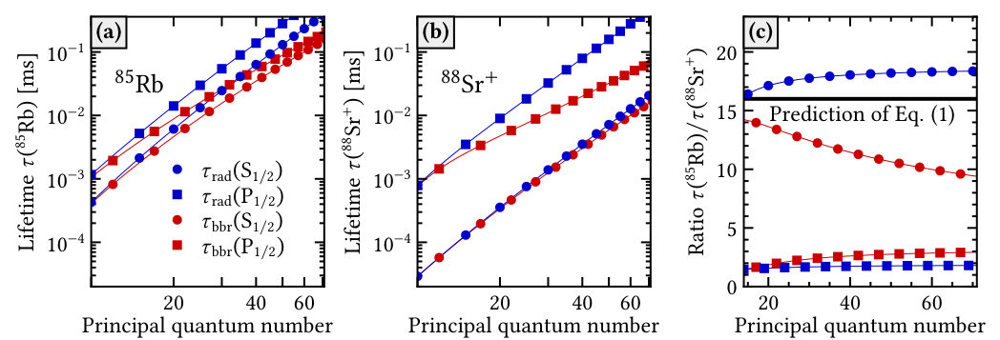
<figcaption class="paper-figure-caption"><b>Fig 1.</b> Figure 1. Rydberg-state lifetimes. (a) Numerically computed lifetimes of Rydberg S (dots) and P (squares) states of 85Rb. Blue and red data show the radiative (T = 0 K) lifetimes (3), τrad, and the room-temperature (T = 300 K) lifetimes (4), τbbr, respectively. The data points are connected to guide the eye. (b) Analogous plot to panel (a) but for 88Sr+. (c) Comparison of lifetimes. The panel shows the ratio τ(85Rb)/τ(88Sr+) between the lifetimes τ(85Rb) and τ(88Sr+) of Rydberg states in 85Rb and 88Sr+. The Hydrogenic scaling law (1) predicts the constant ratio of 16, indicated by the black horizontal line. The lifetimes shown in panels (a) and (b) are tabulated in the Supplemental Material...</figcaption>
</figure>
<figure class="paper-figure-card">
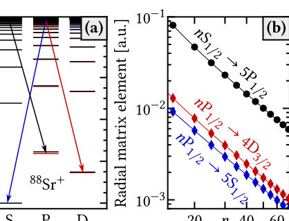
<figcaption class="paper-figure-caption"><b>Fig 2.</b> Figure 2. Electronic spectrum and transition matrix elements of 88Sr+. (a) Electronic bound-state spectrum. Red levels show the energy for j = |l −1/2| and black lev- els for j = l + 1/2. Arrows indicate the dominant radiative decay channels for the Rydberg S and P manifolds. (b) Ra- dial transition dipole matrix elements [24] µi,f [cf. Eq. (3)] as a function of the principal quantum number. For each de- cay channel in panel (a) the radial dipole matrix elements are shown. The colours indicate to which decay channel (arrows) in panel (a) the matrix elements correspond to. Dots and di- amonds correspond to transitions out of the Rydberg S and P manifolds, respectively. The data points are...</figcaption>
</figure>
<figure class="paper-figure-card">
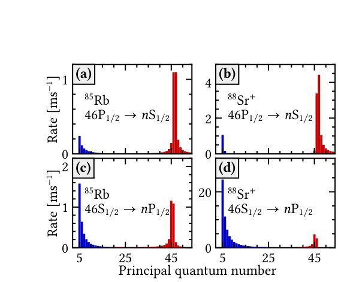
<figcaption class="paper-figure-caption"><b>Fig 3.</b> Figure 3. Rydberg-state depopulation rates. (a) Depop- ulation rates of the Rydberg state 46P1/2 to the states nS1/2 in 85Rb. The decay rate for spontaneous emission, Ai→f, is shown in blue. The depopulation rates Nph(λi,f, T)Ai→f as- sociated with transitions induced by black-body radiation are shown in red, where Nph(λi,f, T) is the average number of photons with wavelength λi,f at temperature T. (b) Same as in (a) but for 88Sr+. (c) Same as in (a) but for transitions depopulating the Rydberg S state. (d) Same as in (c) but for 88Sr+.</figcaption>
</figure>
<figure class="paper-figure-card">
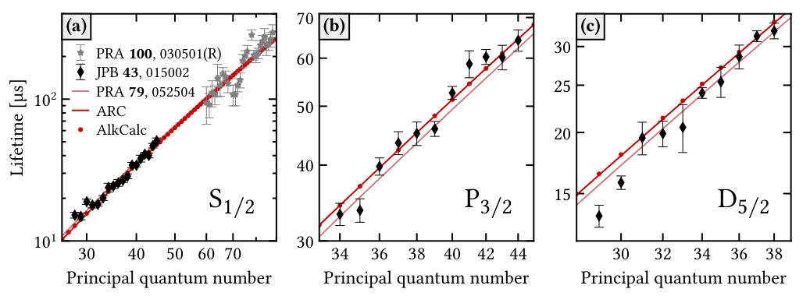
<figcaption class="paper-figure-caption"><b>Fig 4.</b> Figure 4. Benchmark of room-temperature lifetimes of Rydberg states in 85Rb. (a) S-state lifetimes. Red dots show lifetimes of the Rydberg nS1/2 states in 85Rb computed with AlkCalc [37]. Black diamonds show experimental results from Ref. [53] for 85Rb. Grey stars show experimental results from Ref. [54]. In the latter case, the data shown here is not available in tabulated form. Therefore, we employed Anthropic’s Claude (Sonnet 4) to extract the data directly from the figure in the portable-document-format (PDF) file. We note that due to this method, the precision of the data and the associated error bars is not quantitatively known. However, the extracted data (grey stars) agrees well...</figcaption>
</figure>
<figure class="paper-figure-card">
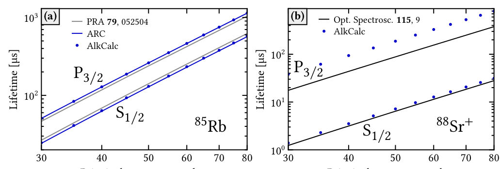
<figcaption class="paper-figure-caption"><b>Fig 5.</b> Figure 5. Comparison of zero-temperature lifetimes of Rydberg states in 85Rb and 88Sr+ to numerical results from the literature. (a) Comparison of lifetimes obtained with AlkCalc [37] (blue dots) and ARC [24] (blue lines) to results from Ref. [44] (grey lines). The lifetimes are shown for S and P states in 85Rb. (b) Comparison of lifetimes obtained with AlkCalc (blue dots) to results from Ref. [31] (black lines). The lifetimes are shown for S and P states in 88Sr+.</figcaption>
</figure>
</div>

<p><strong>Summary.</strong> This study analyzes the lifetimes of Rydberg states in singly charged alkaline-earth metal ions, finding that standard scaling laws fail to predict the longevity. The authors demonstrate anomalous lifetime enhancements at both zero and room temperatures, attributing the zero-T anomaly to matrix element cancellations and the room-T anomaly to increased energy level separation.</p>
<p><strong>Why it may be interesting.</strong> This work provides crucial insights into how core effects (like screening and specific matrix element cancellations) can fundamentally alter fundamental scaling predictions in highly excited atomic states, which is vital for designing robust quantum memory elements.</p>
<details>
<summary>Detailed structure</summary>
<p><strong>Main problem.</strong> The paper investigates the lifetimes of low angular momentum Rydberg states in singly charged alkaline-earth metal ions, challenging the prediction that these lifetimes should be significantly shorter than neutral atoms.</p>
<p><strong>Main result.</strong> Anomalous lifetime enhancements (factors &gt;8) are reported, attributed to accidental cancellations of dipole transition matrix elements at zero temperature and enlarged energetic level separations at room temperature.</p>
<p><strong>Method.</strong> Theoretical calculations using a single-electron model Hamiltonian, involving diagonalization of the Hamiltonian and calculating radiative and black-body radiation-induced decay rates.</p>
<p><strong>Model / system.</strong> The system involves trapped ions (e.g., Sr+, Rb) excited to high-lying Rydberg states. The dynamics are modeled using a single-electron Hamiltonian incorporating screening effects, and lifetimes are calculated for both zero and finite temperatures.</p>
<p><strong>Key observables.</strong> Rydberg state lifetimes ($ au$), radiative decay rates ($ au_{    ext{rad}}^{-1}$), and black-body radiation (BBR) induced decay rates ($ au_{    ext{bbr}}^{-1}$).</p>
<p><strong>Important parameters / regimes.</strong> Singly charged alkaline-earth metal ions ($ ext{Sr}^+,  ext{Ca}^+$), principal quantum number ($n$), and temperature ($T=0$ vs $T=300	ext{ K}$).</p>
<p><strong>Assumptions / limitations.</strong> The analysis relies on a parametric model potential for the ion and assumes that the anomalous effects are dominated by matrix element cancellations or BBR coupling mechanisms.</p>
<p><strong>Figures summary.</strong> Figures compare computed lifetimes for Rb and Sr+ across different quantum numbers, showing deviations from predicted scaling laws, and illustrate the relative contributions of spontaneous vs. BBR decay rates.</p>
<p><strong>Paper structure.</strong> The paper establishes the problem by contrasting predicted scaling laws with observed anomalies. It then details the theoretical mechanisms causing the enhancement at zero and finite temperatures, supported by extensive numerical calculations and comparisons with existing literature.</p>
</details>
<details>
<summary>Abstract</summary>
<p>Trapped ions excited to high-lying electronic states, so-called Rydberg states, open new opportunities for quantum simulation and quantum computing. Generally, the fidelity of quantum coherent operations critically depends on the longevity of Rydberg states. However, scaling laws predict that the lifetimes of Rydberg states in singly charged alkaline-earth metal ions are 16 times shorter, compared to their neutral atom counterparts. Here, we show that this is not generally the case. We report an anomalous lifetime enhancement of certain low angular momentum ionic Rydberg series by factors larger than eight. The anomaly is present at both zero and finite temperature, although it is caused by different mechanisms. At zero temperature, the anomalously enhanced lifetimes are caused by accidental cancellations of the relevant dipole transition matrix elements, while at room temperature the anomaly originates from the enlarged energetic separation of ionic Rydberg levels with respect to neutral-atom levels.</p>
</details>
<p><sub><a href="#top">↑ back to top</a></sub></p>

<p><a id="paper-2609.23946"></a></p>
<h3 id="a-constructive-violation-of-additivity-of-minimum-output-von-neumann-entropy">⭐ <a href="http://arxiv.org/abs/2609.23946v1">A constructive violation of additivity of minimum output von Neumann entropy</a></h3>
<p><strong>Highlighted author(s):</strong> Alexey V. Gorshkov<br>
<strong>Authors:</strong> Laura Shou, Alexey V. Gorshkov<br>
<strong>Type:</strong> theory · <strong>Category:</strong> quantum information and computing · <strong>PDF:</strong> <a href="https://arxiv.org/pdf/2609.23946v1">https://arxiv.org/pdf/2609.23946v1</a><br>
<strong>Analysis basis:</strong> full PDF text, analyzed in chunks</p>
<div class="figure-strip-hint">↔ Scroll figures horizontally</div>
<div class="paper-figures-scroll">
<figure class="paper-figure-card">
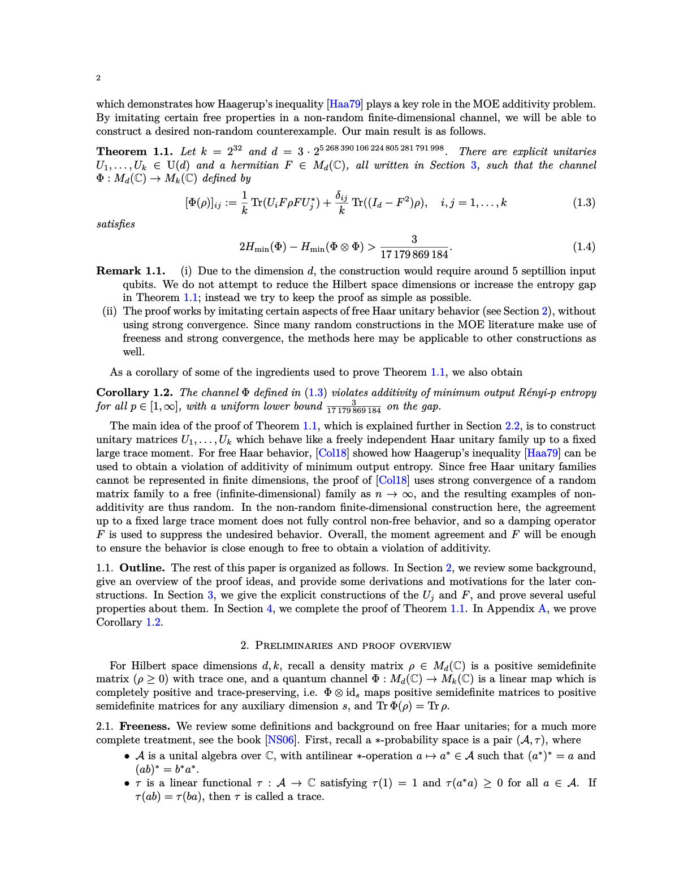
<figcaption class="paper-figure-caption"><b>Fig 1.</b> Low-resolution page preview, page 2</figcaption>
</figure>
<figure class="paper-figure-card">
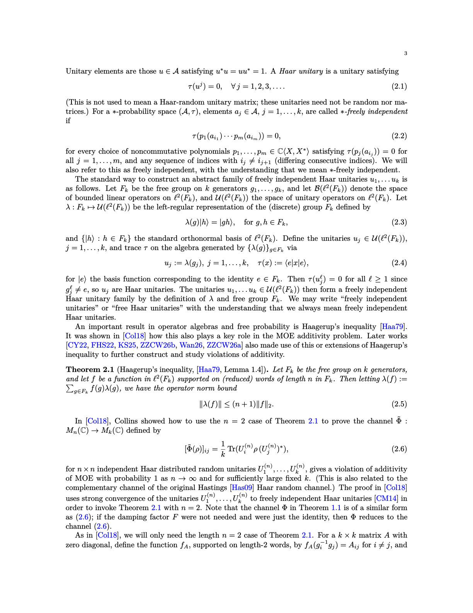
<figcaption class="paper-figure-caption"><b>Fig 2.</b> Low-resolution page preview, page 3</figcaption>
</figure>
<figure class="paper-figure-card">
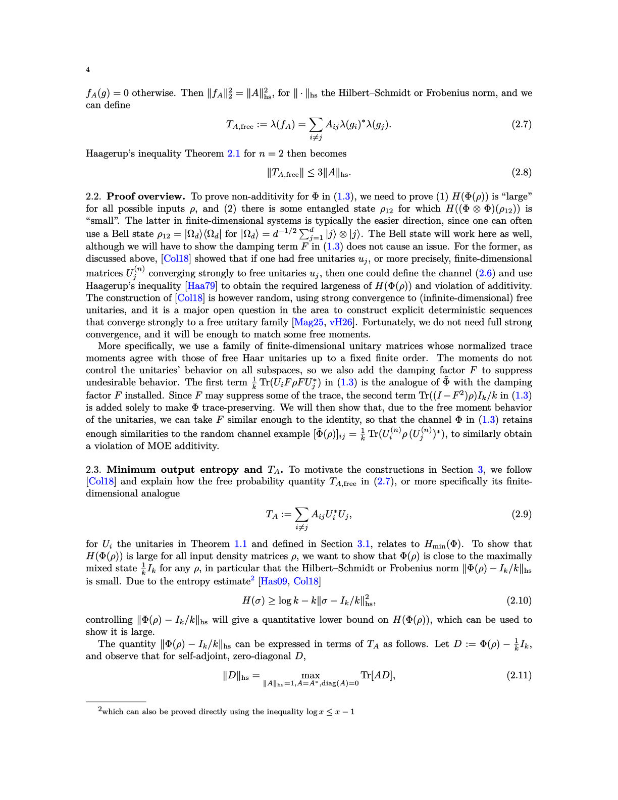
<figcaption class="paper-figure-caption"><b>Fig 3.</b> Low-resolution page preview, page 4</figcaption>
</figure>
<figure class="paper-figure-card">
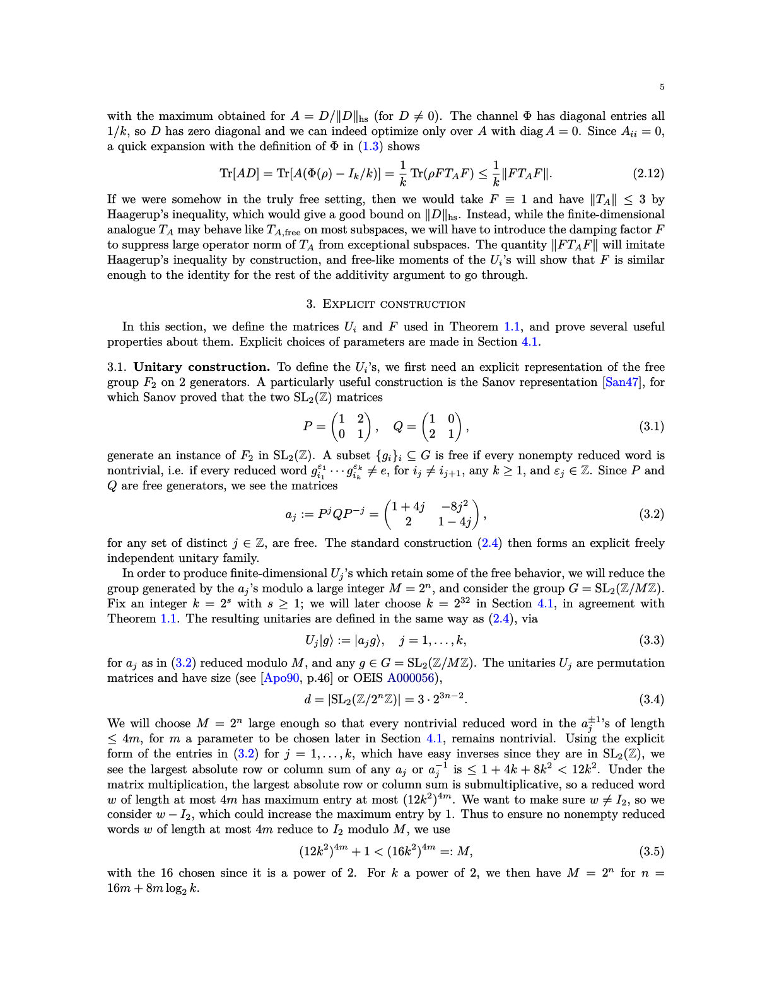
<figcaption class="paper-figure-caption"><b>Fig 4.</b> Low-resolution page preview, page 5</figcaption>
</figure>
<figure class="paper-figure-card">
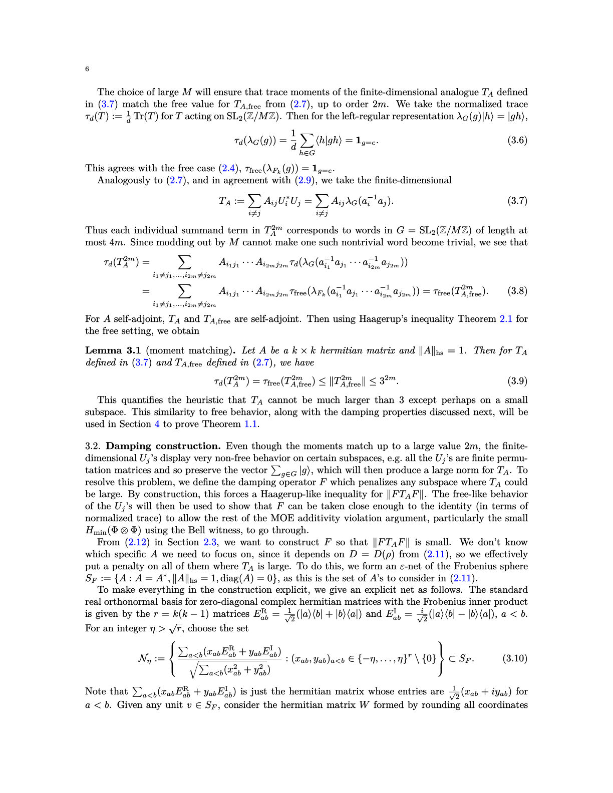
<figcaption class="paper-figure-caption"><b>Fig 5.</b> Low-resolution page preview, page 6</figcaption>
</figure>
</div>

<p><strong>Summary.</strong> This paper constructs a deterministic, finite-dimensional quantum channel that explicitly violates the additivity property for the minimum output von Neumann and Rényi-$p$ entropies. By mimicking free probability structures using a damping operator, the authors establish a positive lower bound for the entropy gap, which is a significant theoretical result in quantum information theory.</p>
<p><strong>Why it may be interesting.</strong> The explicit construction of non-additive behavior for fundamental quantum information measures like entropy is a major theoretical result, providing concrete counterexamples to simple additivity assumptions in quantum information theory.</p>
<details>
<summary>Detailed structure</summary>
<p><strong>Main problem.</strong> The paper aims to construct an explicit, non-random example demonstrating the violation of additivity for the minimum output von Neumann entropy ($H_{\min}(\Phi)$) of a quantum channel $\Phi$.</p>
<p><strong>Main result.</strong> The authors provide a concrete construction showing that $2H_{\min}(\Phi) - H_{\min}(\Phi \otimes \Phi)$ is bounded away from zero, and this violation extends to the minimum output Rényi-$p$ entropy for all $1 \le p \le \infty$.</p>
<p><strong>Method.</strong> The proof uses a finite-dimensional construction that mimics free Haar unitary behavior, relying on matching finite-order trace moments and employing a damping operator $F$ to control operator norms.</p>
<p><strong>Model / system.</strong> The system involves quantum channels $\Phi: 	ext{M}_d(\mathbb{C}) 	o 	ext{M}_k(\mathbb{C})$ acting on finite-dimensional Hilbert spaces, utilizing unitaries derived from free group representations.</p>
<p><strong>Key observables.</strong> Minimum Output von Neumann Entropy ($H_{\min}(\Phi)$) and Minimum Output Rényi-$p$ Entropy ($H_{p, \min}(\Phi)$).</p>
<p><strong>Important parameters / regimes.</strong> The construction requires high dimensions ($d = 3 \cdot 2^{268} \dots$) and involves carefully chosen parameters ($L, \eta, m, k$) to ensure the entropy gap is positive.</p>
<p><strong>Assumptions / limitations.</strong> The method circumvents the difficulty of proving strong convergence to free unitaries by only requiring agreement up to a fixed, finite order of trace moments.</p>
<p><strong>Paper structure.</strong> The paper develops the argument by first defining the channel structure using unitaries and a damping operator $F$. It then establishes lower bounds for the single-use and two-use minimum output entropies using operator norm bounds, culminating in the explicit calculation of a positive lower bound for the entropy gap for all $p$.</p>
</details>
<details>
<summary>Abstract</summary>
<p>We give an explicit non-random example of nonadditivity of minimum output von Neumann entropy. The proof uses a finite-dimensional construction which imitates free Haar unitary behavior. The same channel also gives a violation of additivity for the minimum output Rényi-$p$ entropy for any $1\le p\le\infty$.</p>
</details>
<p><sub><a href="#top">↑ back to top</a></sub></p>

<p><a id="paper-2609.22946"></a></p>
<h3 id="secure-quantum-metasurfaces-for-direct-quantum-key-distribution-measurements"><a href="http://arxiv.org/abs/2609.22946v1">Secure Quantum Metasurfaces for Direct Quantum Key Distribution Measurements</a></h3>
<p><strong>Authors:</strong> Yan He, Adetunmise C. Dada<br>
<strong>Type:</strong> both · <strong>Category:</strong> quantum information and computing · <strong>PDF:</strong> <a href="https://arxiv.org/pdf/2609.22946v1">https://arxiv.org/pdf/2609.22946v1</a><br>
<strong>Analysis basis:</strong> full PDF text, analyzed in chunks
<strong>Topic relevance:</strong> 🔥 <code>quantum measurements</code> <strong>5/5</strong> · 🔥 <code>quantum optics experiment</code> <strong>4/5</strong> · <code>QC/QI experiment</code> <strong>3/5</strong> · <code>interference shaping light</code> <strong>2/5</strong></p>
<div class="figure-strip-hint">↔ Scroll figures horizontally</div>
<div class="paper-figures-scroll">
<figure class="paper-figure-card">
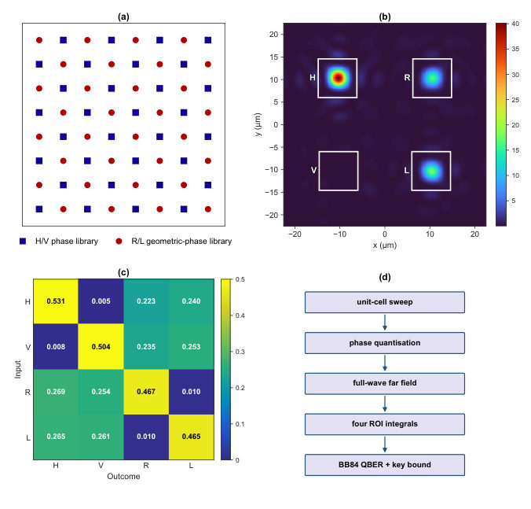
<figcaption class="paper-figure-caption"><b>Fig 1.</b> FIG. 1. Focal-plane reconstruction of the BB84 measurement. (a) Interleaved linear- and circular- basis sublattices. (b) Selected 1550 nm H-input far field with the calibration-fixed four-region integration boundaries. (c) Conditional response obtained from the integrated detector powers, with a probability fidelity of 99.08%. (d) Analysis sequence from the unit-cell sweep to the BB84 metrics. Each port centre is obtained from a local elliptical-Gaussian-plus-constant fit to its matched-state spot. One common square per device is the smallest that retains at least 99% of every fitted core and 95% of the empirical background- corrected energy, with no more than 10% fitted-baseline...</figcaption>
</figure>
<figure class="paper-figure-card">
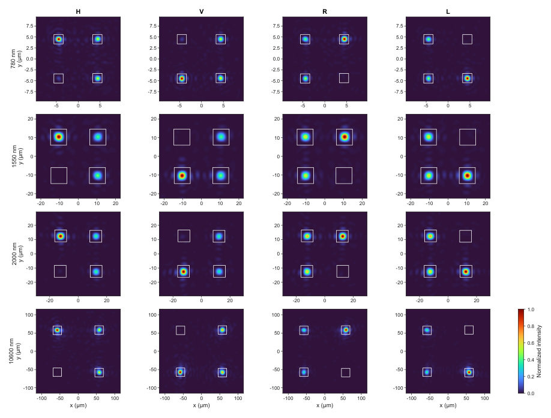
<figcaption class="paper-figure-caption"><b>Fig 2.</b> FIG. 2. Full-wave focal-plane intensity for the selected four-port designs. Rows show independent metasurfaces optimized at 780, 1550, 2000, and 10 600 nm; columns show H, V , R, and L inputs. Intensities are normalized within each panel for spatial comparison, while absolute transmission and collection are retained separately in the quantitative analysis. Rectangles show the calibration-fixed detector regions used in Equation (3).</figcaption>
</figure>
<figure class="paper-figure-card">
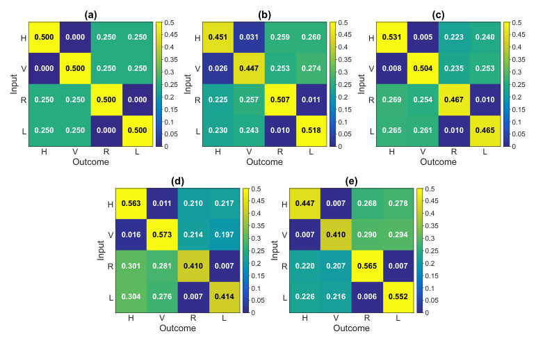
<figcaption class="paper-figure-caption"><b>Fig 3.</b> FIG. 3. Conditional four-outcome response matrices. (a) Ideal passive BB84 response. (b–e) Responses calculated from the selected full-wave intensities at 780, 1550, 2000, and 10 600 nm, respectively, with probability fidelities of 0.980, 0.991, 0.983, and 0.989. Rows are input states and columns are detector outcomes in the order H, V, R, L; every row sums to unity over the four accepted regions. Diagonal entries are matched outcomes, the orthogonal port in the same basis represents a bit error, and the two outcomes in the conjugate basis form the ideally balanced random split.</figcaption>
</figure>
<figure class="paper-figure-card">
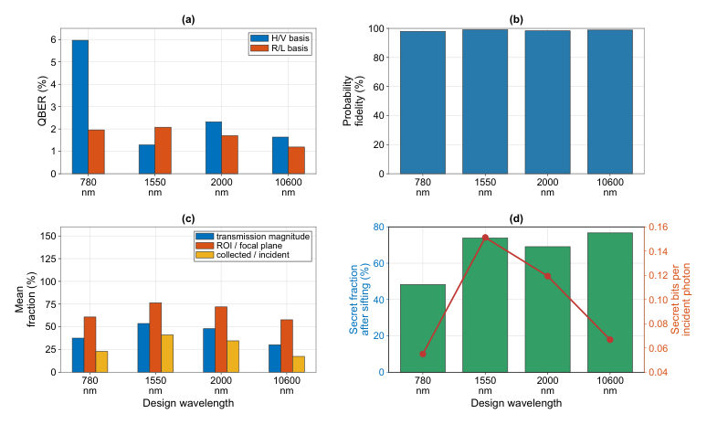
<figcaption class="paper-figure-caption"><b>Fig 4.</b> FIG. 4. Optical and protocol metrics for the selected designs. (a) Basis-conditioned QBER. (b) Conditional probability fidelity. (c) Mean transmission, four-region focal-plane collection fraction, and collected efficiency. (d) Secret fraction after sifting and secret bits per incident photon under the asymptotic model in Equation (7).</figcaption>
</figure>
<figure class="paper-figure-card">
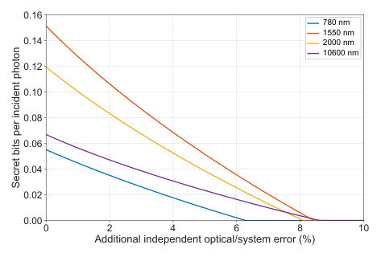
<figcaption class="paper-figure-caption"><b>Fig 5.</b> FIG. 5. Effect of additional bit errors on secret-key yield. The curves show how the number of secret bits per incident photon decreases as additional errors are introduced into each device’s simulated measurement outcomes. The added errors flip a bit from 0 to 1 or from 1 to 0 with equal probability.</figcaption>
</figure>
</div>

<p><strong>Summary.</strong> This paper introduces the use of dielectric metasurfaces as integrated, passive measurement devices for Quantum Key Distribution (QKD). By engineering subwavelength apertures, the metasurface directly performs the necessary polarization and basis measurements for protocols like BB84. The results demonstrate high performance metrics, establishing a viable, compact, and scalable meta-optics route for next-generation quantum communication hardware.</p>
<p><strong>Why it may be interesting.</strong> This work is highly relevant to quantum optics and open quantum systems because it proposes a solid-state, integrated platform to perform fundamental quantum measurements (like those in QKD) with unprecedented compactness and efficiency, moving quantum technology from bulky lab setups to chip-scale devices.</p>
<details>
<summary>Detailed structure</summary>
<p><strong>Main problem.</strong> The primary challenge is developing a compact, passive measurement device capable of realizing the Positive-Operator-Valued Measure (POVM) required for Quantum Key Distribution (QKD) protocols like BB84, circumventing the complexity of traditional bulk optics.</p>
<p><strong>Main result.</strong> The authors successfully demonstrated that protocol-matched meta-optics can function as the entire measurement device, achieving high fidelity (up to 99.08%) and a significant device-level secret key yield (0.151 bits/photon at 1550 nm).</p>
<p><strong>Method.</strong> The study uses full-wave simulations to design dielectric metasurfaces with subwavelength apertures that interweave polarization-dependent phase libraries, mapping the entire passive-BB84 measurement onto four detector channels.</p>
<p><strong>Model / system.</strong> The physical system is a dielectric metasurface fabricated with wavelength-specific apertures (e.g., at 780 nm, 1550 nm, 2000 nm, 10.6 $\mu$m). These structures are designed to perform the required polarization and basis measurements directly at the focal plane.</p>
<p><strong>Key observables.</strong> Probability fidelities (97.96–99.08%), four-port collected efficiencies (17.43–40.94%), mean intrinsic QBER (1.42–3.96%), and asymptotic device-level secret key yield (e.g., 0.151 bits/photon at 1550 nm).</p>
<p><strong>Important parameters / regimes.</strong> Operating wavelengths (780 nm, 1550 nm, 2000 nm, 10.6 $\mu$m); subwavelength cell pitch (0.44–0.49$\lambda$); and the specific polarization bases (H/V, R/L).</p>
<p><strong>Assumptions / limitations.</strong> The analysis assumes that detector regions are determined independently using fixed calibration methods to prevent post-processing bias, and the designs are treated as distinct for different operating wavelengths.</p>
<p><strong>Figures summary.</strong> Figures illustrate the focal-plane reconstruction of the BB84 measurement, showing interleaved sublattices and conditional responses. Supporting figures detail the characterization of various materials (Si, TiO2) and the extraction of Gaussian-fit parameters for detector response matrices.</p>
<p><strong>Paper structure.</strong> The paper progresses from establishing the need for compact QKD measurement devices, detailing the metasurface design principles (subwavelength interleaving), presenting quantitative performance metrics across multiple wavelengths, and concluding with detailed characterization of the optical response using simulation and calibration diagnostics.</p>
</details>
<details>
<summary>Abstract</summary>
<p>Quantum key distribution (QKD) can deliver information-theoretic security, but its receivers are still typically assembled from cascaded bulk optics. Metasurfaces offer a radical reduction in this complexity. Here, we make the metasurface function as the QKD measurement device itself. We design wavelength-specific dielectric apertures at 780, 1550, 2000, and 10 600 nm that interweave the linear H/V and circular R/L phase libraries at a 0.44--0.49λ cell pitch, i.e., below half the operating wavelength, and map the complete passive-BB84 measurement directly onto four detector channels. This subwavelength basis co-location prevents an ordinary propagating-wave aperture mask from isolating one basis without simultaneously attenuating or perturbing the other. Simulated full-wave focal-plane intensities are converted directly into conditional Born probabilities using fitted, calibration-fixed detector regions. The selected designs achieve probability fidelities of 97.96--99.08%, four-port collected efficiencies of 17.43--40.94%, and mean intrinsic quantum bit error rates of 1.42--3.96%. At 1550 nm, the selected design gives an asymptotic device-level yield of 0.151 secret bits per incident photon under an ideal single-photon model. Six-state detector tomography gives positive both-basis security bounds for all six reconstructed receiver models, including their polarization-dependent loss, basis imbalance and crosstalk. These results establish protocol-matched meta-optics as a route to compact, passive QKD receivers.</p>
</details>
<p><sub><a href="#top">↑ back to top</a></sub></p>

<p><a id="paper-2609.22572"></a></p>
<h3 id="modular-fault-tolerant-quantum-computing-on-a-non-css-code"><a href="http://arxiv.org/abs/2609.22572v1">Modular fault-tolerant quantum computing on a non-CSS code</a></h3>
<p><strong>Authors:</strong> Robert Freund, Friederike Butt, César Benito, Ivan Pogorelov, Marcel Meyer, Alex Steiner, Alejandro Bermudez, Markus Müller, Thomas Monz<br>
<strong>Type:</strong> experiment · <strong>Category:</strong> quantum information and computing · <strong>PDF:</strong> <a href="https://arxiv.org/pdf/2609.22572v1">https://arxiv.org/pdf/2609.22572v1</a><br>
<strong>Analysis basis:</strong> full PDF text, analyzed in chunks
<strong>Topic relevance:</strong> 🔥 <code>QC/QI experiment</code> <strong>5/5</strong> · <code>quantum measurements</code> <strong>1/5</strong></p>
<div class="figure-strip-hint">↔ Scroll figures horizontally</div>
<div class="paper-figures-scroll">
<figure class="paper-figure-card">
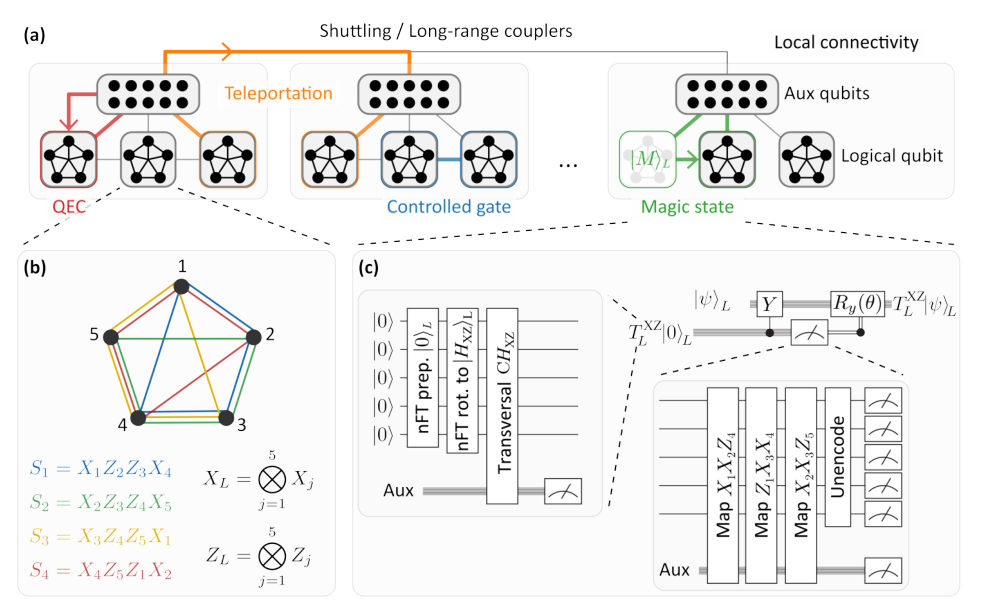
<figcaption class="paper-figure-caption"><b>Fig 1.</b> FIG. 1. Modular quantum computing architecture using the [[5, 1, 3]] code. (a) Scalable quantum computing architec- ture based on a modular design featuring smaller units with local connectivity within the logical qubit and ancilla qubit registers. The ancilla qubits of different units are connected via long-range couplers or shuttling. (b) The four weight-4 stabilizers of the [[5, 1, 3]] code are cyclic permutations of S(1) = X1Z2Z3X4I5. The logical Pauli operations can be implemented by applying X and Z to all five physical qubits. (c) Logical operations are decomposed into physical operations for the example of magic state injection. This operation realizes a logical π/4-rotation around...</figcaption>
</figure>
<figure class="paper-figure-card">
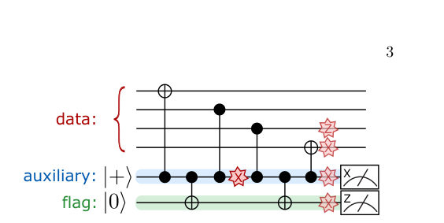
<figcaption class="paper-figure-caption"><b>Fig 2.</b> FIG. 2. Circuit for fault-tolerant stabilizer measure- ment [1, 39]. An XZZX stabilizer is measured by coupling an auxiliary qubit to the data qubits that support the respec- tive operator. An additional flag qubit is coupled to the first auxiliary qubit such that potentially dangerous errors (red) also propagate onto the flag qubit and become detectable.</figcaption>
</figure>
<figure class="paper-figure-card">
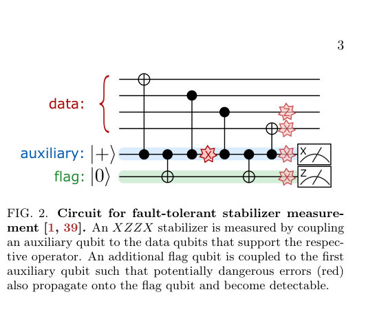
<figcaption class="paper-figure-caption"><b>Fig 3.</b> Fig. 1(c). This includes all building blocks required for implementing a quantum memory, state teleportation, as well as magic state injection.</figcaption>
</figure>
<figure class="paper-figure-card">
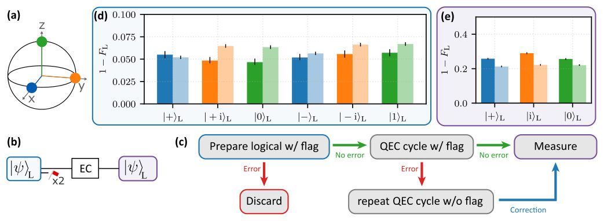
<figcaption class="paper-figure-caption"><b>Fig 4.</b> FIG. 3. Fault-tolerant state preparation and quantum memory. (a) ±1 eigenstates of the three logical Pauli operators X, Y and Z in the Bloch-sphere representation. (b) A Pauli eigenstates is prepared and followed by a round of fault-tolerant QEC and a logical measurement, together realizing a quantum memory. (c) The decision tree outlining the mid-circuit classical logic of the FT QEC cycle on a single logical qubit including potential real-time corrections. (d) Experimental logical state infidelities (dark) for the six cardinal states after FT logical state preparation and a FT logical measurement in the respective basis. Results from numerical simulations (light) are shown alongside for...</figcaption>
</figure>
<figure class="paper-figure-card">
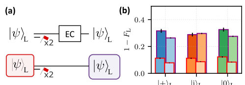
<figcaption class="paper-figure-caption"><b>Fig 5.</b> FIG. 4. Logical spectator error. (a) We prepare two logi- cal qubits and measure the infidelity of the lower qubit before (red box) and after (purple box) performing a QEC cycle on the upper qubit. (b) Infidelities of the lower logical qubit before (red-outlined bars in the front) and after (bars in the background) the QEC cycle on the upper logical qubit is ap- plied. The uncertainty of the infidelity is given by 1σ Clopper- Pearson confidence intervals.</figcaption>
</figure>
</div>

<p><strong>Summary.</strong> This paper reports the first experimental realization of modular, fault-tolerant quantum computation using a non-CSS quantum error-correcting code on a trapped-ion quantum computer. The authors implemented all necessary logical operations, including state teleportation and QEC, demonstrating the viability of compact codes for scaling quantum processors. This advances the field by proving fault tolerance beyond traditional CSS codes.</p>
<p><strong>Why it may be interesting.</strong> For AMO physicists, this work showcases the direct application of complex quantum information theory (QEC) to a physical hardware platform (trapped ions), providing benchmarks for fault tolerance in ion-trap systems.</p>
<details>
<summary>Detailed structure</summary>
<p><strong>Main problem.</strong> The paper addresses the challenge of implementing modular, fault-tolerant universal quantum computation using non-Calderbank-Shor-Steane (CSS) quantum error-correcting codes.</p>
<p><strong>Main result.</strong> They successfully demonstrated the first experimental implementation of modular universal logical quantum computation for the $[[5, 1, 3]]$ non-CSS code on a trapped-ion platform.</p>
<p><strong>Method.</strong> The work involves implementing a full suite of fault-tolerant logical operations, including state teleportation, QEC, and logical measurements, tailored for the specific non-CSS code structure.</p>
<p><strong>Model / system.</strong> The physical platform is a trapped-ion quantum computer utilizing $^{40}	ext{Ca}^+$ ions. The logical encoding is based on the perfect $[[5, 1, 3]]$ code, which is compact and non-CSS.</p>
<p><strong>Key observables.</strong> Logical state preparation and measurement (SPAM) fidelity, acceptance rates for protocols, and the characterization of logical spectator error.</p>
<p><strong>Important parameters / regimes.</strong> The code parameters are $[[5, 1, 3]]$ (5 physical qubits, 1 logical qubit, distance 3). The fidelity measurements are reported with specific numerical values (e.g., $5.24\%$).</p>
<p><strong>Assumptions / limitations.</strong> The analysis often relies on postselection to maintain technical feasibility for deep protocols, and it assumes the physical measurement layer is reliable for tomography.</p>
<p><strong>Figures summary.</strong> Figures illustrate the modular architecture, the circuit for fault-tolerant stabilizer measurement ($XZZX$), and results for state preparation, quantum memory, and spectator error.</p>
<p><strong>Paper structure.</strong> The paper progresses from establishing the modular architecture and the use of the non-CSS code, through detailed demonstrations of core protocols (SPAM, QEC, Measurement), to characterizing error sources like spectator error and performing process tomography.</p>
</details>
<details>
<summary>Abstract</summary>
<p>Modularization promises to break down the design and implementation complexity of large scale quantum processors into smaller manageable subtasks. In this approach, quantum channels, realized for instance through physical rerouting of qubits or quantum teleportation, connect multiple modules. Each of those modules hosts a subset of qubits, e.g. multiple logical qubits, and provides quantum operations on them. In this work, we implement for the first time all logical operations required for modular fault-tolerant universal quantum computing with a non-Calderbank-Shor-Steane (CSS) code, the perfect $[[5, 1, 3]]$ code, on a trapped-ion quantum computer. This code is the smallest quantum error-correcting (QEC) code capable of correcting any single-qubit error, making it a compact alternative to larger CSS codes. We demonstrate logical state teleportation and a full suite of fault-tolerant operations required for universal logical control, including logical state preparation, QEC with real-time feedback, logical measurements, magic-state preparation, logical entangling operations, and magic-state injection. Moreover, we characterize the logical spectator error picked up by idling logical qubits during quantum operations on distinct qubit registers and demonstrate a logical Pauli quantum process tomography that minimizes required sampling resources for logical tomography.</p>
</details>
<p><sub><a href="#top">↑ back to top</a></sub></p>

<p><a id="paper-2609.24800"></a></p>
<h3 id="collective-cavity-quantum-electrodynamics-in-solid-state-optical-clocks"><a href="http://arxiv.org/abs/2609.24800v1">Collective cavity quantum electrodynamics in solid-state optical clocks</a></h3>
<p><strong>Authors:</strong> Karen Mamian, Georgy A. Kazakov, Thorsten Schumm, Charles Roques-Carmes<br>
<strong>Type:</strong> theory · <strong>Category:</strong> other · <strong>PDF:</strong> <a href="https://arxiv.org/pdf/2609.24800v1">https://arxiv.org/pdf/2609.24800v1</a><br>
<strong>Analysis basis:</strong> full PDF text, analyzed in chunks
<strong>Topic relevance:</strong> 🔥 <code>Tavis-Cummings &amp; cavity-many-emitter</code> <strong>4/5</strong> · <code>analog quantum simulation</code> <strong>3/5</strong> · <code>correlated / nonlocal dissipation</code> <strong>3/5</strong> · <code>driven-dissipative phase transition</code> <strong>3/5</strong> · <code>methods for driven-dissipative</code> <strong>3/5</strong> · <code>Dicke superradiance</code> <strong>2/5</strong> · <code>quantum measurements</code> <strong>2/5</strong> · <code>Keldysh / 2PI / non-Gaussian methods</code> <strong>1/5</strong> · <code>non-equilibrium universality</code> <strong>1/5</strong> · <code>superradiant laser</code> <strong>1/5</strong></p>
<div class="figure-strip-hint">↔ Scroll figures horizontally</div>
<div class="paper-figures-scroll">
<figure class="paper-figure-card">
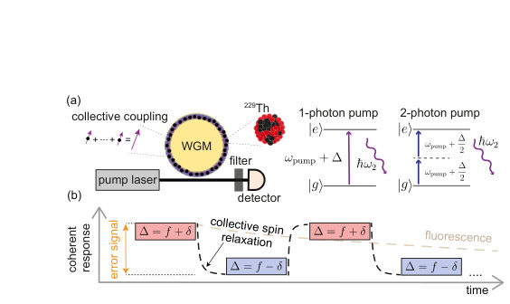
<figcaption class="paper-figure-caption"><b>Fig 1.</b> FIG. 1. Concept of a coherent nuclear frequency stan- dard based on a whispering-gallery mode (WGM) res- onator containing 229Th. (a) Schematic of the proposed setup and 1- or 2-photon pumping of the 229Th isomeric tran- sition. (b) Schematic of the proposed interrogation sequences, leveraging the coherent transient signal to determine the off- set of the pumping laser frequency from the nuclear tran- sition, enabling fast state reinitialization and practically no dead time between cycles.</figcaption>
</figure>
<figure class="paper-figure-card">
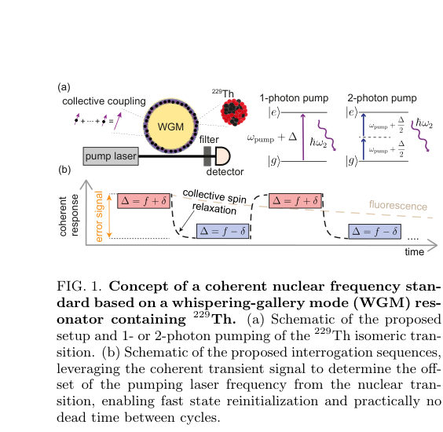
<figcaption class="paper-figure-caption"><b>Fig 2.</b> Fig. 1, and Ref. [35] for experimental implementation). We consider two nuclear excitation mechanisms. One- photon pumping directly drives the resonant magnetic dipole (M1) transition, as recently demonstrated experi- mentally [26]. Two-photon pumping exploits the recently predicted optonuclear quadrupolar (ONQ) effect [41, 42], which could enable interrogation at 296 nm rather than 148 nm through the second-order nuclear quadrupolar response to the electric-field gradient, enabling the use of commercially available laser systems, reducing crystal damage, and allowing operation in air rather than vac- uum. To enable homogeneous coupling of nuclei to the field in our two-photon-pumped case,...</figcaption>
</figure>
<figure class="paper-figure-card">
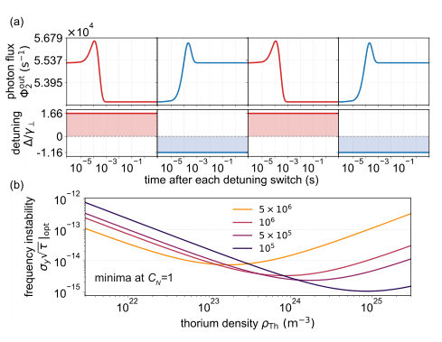
<figcaption class="paper-figure-caption"><b>Fig 3.</b> FIG. 2. Low-saturation steady state clock. (a) Out- put photon flux Φout 2 = κext 2 ⟨a† 2a2⟩at Q1 = 5 × 106, Q2 = Q1/8 during two clock cycles with exemplary values of f = γz/4, δ = √</figcaption>
</figure>
<figure class="paper-figure-card">
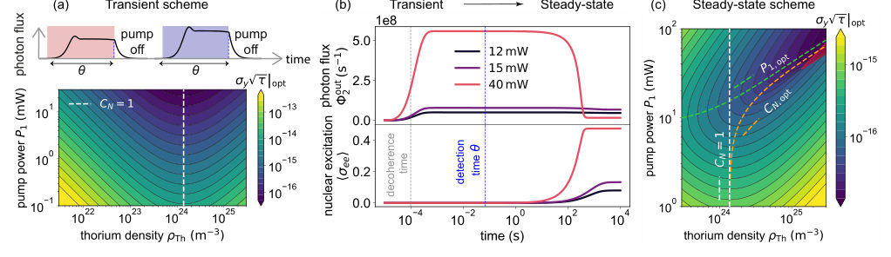
<figcaption class="paper-figure-caption"><b>Fig 4.</b> FIG. 3. From transient to steady-state frequency standards. (a) Transient frequency standard interrogation scheme and corresponding optimized frequency instability as a function of ρTh and P1. (b) Output photon flux dynamics Φout 2 and nuclear excitation σee for three pump powers, featuring the transient pulse-like behavior and the relaxation towards the steady state. (c) General frequency instability as a function of pump power P1, thorium density ρTh, at each point separately numerically optimized with respect to δ. All plots are at fixed Q1 = 5 × 106, Q2 = Q1/8. The red region on the colormap shows the bistability range predicted by mean-field analysis.</figcaption>
</figure>
<figure class="paper-figure-card">
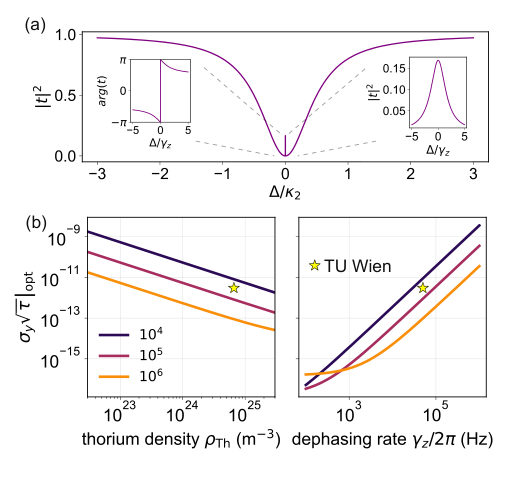
<figcaption class="paper-figure-caption"><b>Fig 5.</b> FIG. 4. Nuclear clock based on collective cavity an- tiresonance. (a) Antiresonance in transmission as a function of ∆: the nuclei introduce a phase shift around the resonance, thus breaking the destructive interference condition between the outcoupled light from the resonator and the transmitted light from the input waveguide. (b) Comparison of frequency instability of the antiresonant clock with the TU Wien nu- clear clock experiment [28] at P2 = 100 pW pump power, γz = 2π × 50 kHz, and ρTh = 6 × 1024 m−3. The different lines correspond to Q2 = 104, 105, 106.</figcaption>
</figure>
</div>

<p><strong>Summary.</strong> This paper proposes novel cavity QED-enhanced interrogation schemes for solid-state optical clocks using the $^{229}	ext{Th}$ nuclear transition. By analyzing the collective coupling of nuclei to cavity modes, the authors show that the clock's frequency instability is minimized when the collective cooperativity equals unity. This approach overcomes decoherence limitations by utilizing collective coherence for fast, high-precision measurements.</p>
<p><strong>Why it may be interesting.</strong> This work provides a detailed theoretical framework for enhancing quantum sensing in solid-state platforms by explicitly incorporating collective quantum effects (cooperativity) into the clock stability analysis, which is highly relevant to open quantum systems and quantum optics.</p>
<details>
<summary>Detailed structure</summary>
<p><strong>Main problem.</strong> Solid-state frequency standards are limited by strong decoherence, making conventional interrogation schemes inefficient for systems like the $^{229}	ext{Th}$ nuclear clock.</p>
<p><strong>Main result.</strong> The optimal clock frequency instability is achieved when the collective cooperativity parameter equals unity ($C_N=1$), allowing fast interrogation by leveraging collective nuclear coherence.</p>
<p><strong>Method.</strong> The authors analyze the system dynamics using mean-field equations derived from the master equation, optimizing the frequency instability ($\sigma_y$) by varying system parameters.</p>
<p><strong>Model / system.</strong> The system involves $^{229}	ext{Th}$ nuclei coupled to nanophotonic modes within a WGM resonator, modeled using cavity QED Hamiltonian terms and analyzed via the Born-Markov master equation.</p>
<p><strong>Key observables.</strong> Fractional frequency instability ($\sigma_y$), photon number ($n_2(t)$), and the collective cooperativity parameter ($C_N$).</p>
<p><strong>Important parameters / regimes.</strong> Optimal instability minimum at $C_N=1$; the analysis considers regimes like the bad-cavity limit and low-saturation conditions.</p>
<p><strong>Assumptions / limitations.</strong> The analysis relies on mean-field approximations, assuming independent Poisson distributions for variance calculation, and analyzing specific pumping regimes (e.g., two-photon pumping).</p>
<p><strong>Figures summary.</strong> Figures illustrate the output photon flux and optimized frequency instability versus density ($
ho_{    ext{Th}}$), showing the minimum instability at $C_N=1$, and also depict the bistability region in parameter space.</p>
<p><strong>Paper structure.</strong> The paper progresses from establishing the physical problem and Hamiltonian, deriving the mean-field dynamics, analyzing the optimal interrogation schemes (transient vs. steady-state), and finally deriving the minimum instability and investigating parameter regimes like bistability and one-photon pumping.</p>
</details>
<details>
<summary>Abstract</summary>
<p>Solid-state frequency standards are generally limited by strong decoherence, rendering conventional interrogation schemes inefficient. The $^{229}$Th nuclear clock provides a unique and timely platform for solid-state optical metrology and nuclear cavity quantum electrodynamics (QED), featuring a coherence time many orders of magnitude shorter than the radiative lifetime in current experiments. Here, we propose and analyze three cavity QED-enhanced clock interrogation schemes that turn this timescale mismatch into an advantage, leveraging collective coupling of thorium nuclei to nanophotonic modes to enable fast interrogation and detection despite the long population lifetime. We reveal the central role of collective cooperativity in determining the clock frequency instability, and derive the optimal conditions (power, working-point detuning, thorium density) for clock operation.</p>
</details>
<p><sub><a href="#top">↑ back to top</a></sub></p>

<p><a id="paper-2609.23811"></a></p>
<h3 id="robust-spin-universality-across-a-ballistic-to-diffusive-transport-crossover"><a href="http://arxiv.org/abs/2609.23811v1">Robust Spin Universality Across a Ballistic-to-Diffusive Transport Crossover</a></h3>
<p><strong>Authors:</strong> Cătălin Paşcu Moca, Ovidiu I. Pâţu, Balázs Dóra<br>
<strong>Type:</strong> theory · <strong>Category:</strong> strongly correlated electrons · <strong>PDF:</strong> <a href="https://arxiv.org/pdf/2609.23811v1">https://arxiv.org/pdf/2609.23811v1</a><br>
<strong>Analysis basis:</strong> full PDF text, analyzed in chunks
<strong>Topic relevance:</strong> 🔥 <code>methods for driven-dissipative</code> <strong>4/5</strong> · 🔥 <code>non-equilibrium universality</code> <strong>4/5</strong> · <code>Full counting statistics</code> <strong>3/5</strong> · <code>analog quantum simulation</code> <strong>3/5</strong> · <code>correlated / nonlocal dissipation</code> <strong>3/5</strong> · <code>driven-dissipative phase transition</code> <strong>3/5</strong> · <code>Keldysh / 2PI / non-Gaussian methods</code> <strong>2/5</strong> · <code>quantum measurements</code> <strong>1/5</strong></p>
<div class="figure-strip-hint">↔ Scroll figures horizontally</div>
<div class="paper-figures-scroll">
<figure class="paper-figure-card">
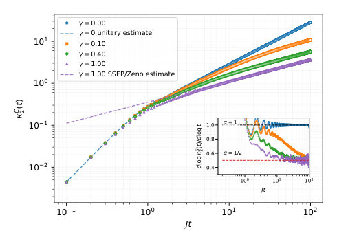
<figcaption class="paper-figure-caption"><b>Fig 1.</b> FIG. 1. Charge-current crossover. The second charge cumulant κC 2 (t, γ) is shown for several dephasing strengths. The unitary curve grows linearly, whereas every finite-γ curve crosses to- ward the diffusive single-file law κC 2 ∝t1/2. The inset shows the effective exponent d ln κC 2 /d ln t, approaching 1 at γ = 0 and 1/2 for γ &gt; 0. The strong-dephasing asymptote (dashed) is Eq. (13). Finite-γ results use the stochastic determinant with L = 200 and 2000 noise realizations.</figcaption>
</figure>
<figure class="paper-figure-card">
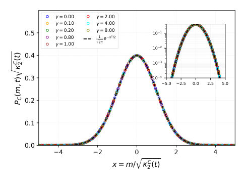
<figcaption class="paper-figure-caption"><b>Fig 2.</b> FIG. 2. Charge-transfer distributions versus m/ p</figcaption>
</figure>
<figure class="paper-figure-card">
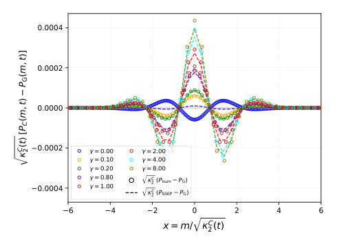
<figcaption class="paper-figure-caption"><b>Fig 3.</b> FIG. 3. Deviations from Gaussianity. Difference between the numerical charge-transfer distribution and its Gaussian approximation. Dashed lines indicate the corresponding SSEP- Gaussian deviations.</figcaption>
</figure>
<figure class="paper-figure-card">
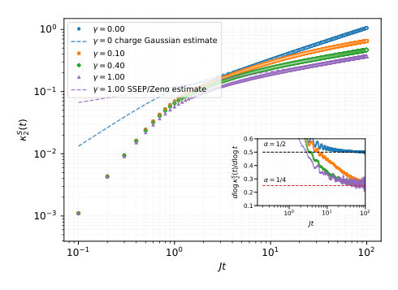
<figcaption class="paper-figure-caption"><b>Fig 4.</b> FIG. 4. Anomalous spin broadening. The second spin cumu- lant follows the asymptotic subordination result, Eq. (19). Its effective exponent approaches 1/2 at γ = 0 and 1/4 for γ &gt; 0, corresponding to distribution widths t1/4 and t1/8, respectively. Dashed lines show the analytical unitary and Zeno asymptotes. Finite-γ results use L = 200 and 2000 noise realizations. The inset shows the effective exponent d ln κS 2/d ln t asymptotically approaching 1/2 at γ = 0 and 1/4 for γ &gt; 0.</figcaption>
</figure>
<figure class="paper-figure-card">
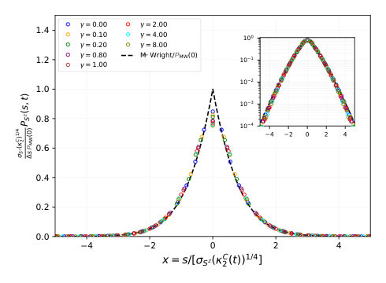
<figcaption class="paper-figure-caption"><b>Fig 5.</b> FIG. 5. Dephasing-robust central scaling. The rescaled distri- butions ℓSPS collapse onto the M-Wright law, Eq. (18), when plotted versus S/ℓS, despite the change in the growth exponent of ℓS. The inset displays the same data on a logarithmic scale. Finite-γ results use 2000 noise realizations. System size is L = 2000.</figcaption>
</figure>
</div>

<p><strong>Summary.</strong> This paper addresses the fundamental question of universality in open quantum systems by studying the Hubbard chain's crossover from ballistic to diffusive transport. The authors show that while local dephasing changes the time-dependent transport exponents, the underlying spin fluctuations maintain a universal M-Wright scaling function. This confirms the robustness of the statistical description despite strong environmental coupling.</p>
<p><strong>Why it may be interesting.</strong> This work is highly relevant to AMO and open quantum systems because it provides a rigorous test of universality in non-equilibrium quantum transport, showing how dissipation affects scaling laws without destroying fundamental statistical features.</p>
<details>
<summary>Detailed structure</summary>
<p><strong>Main problem.</strong> The study investigates whether the universality class of Full Counting Statistics (FCS) is preserved when an open quantum system undergoes a crossover from coherent (ballistic) to incoherent (diffusive) transport.</p>
<p><strong>Main result.</strong> The research demonstrates that local density dephasing alters the transport exponents (e.g., from $t^1$ to $t^{1/2}$) but crucially preserves the underlying non-Gaussian M-Wright spin fluctuation scaling function.</p>
<p><strong>Method.</strong> The authors utilize the exact spin-charge composition law inherent to the model, analyzing the charge and spin sectors separately and comparing results from free-fermion reductions against matrix-product-state evolutions.</p>
<p><strong>Model / system.</strong> The system analyzed is the infinite-U Hubbard chain, which is modeled using a Lindblad master equation incorporating local dephasing jump operators. The dynamics are constrained by an exact spin-charge composition law.</p>
<p><strong>Key observables.</strong> Charge transfer ($Q(t)$) and spin transfer ($S(t)$) characteristic functions ($\chi_C, \chi_S$), and their respective second cumulants ($\kappa_C^2, \kappa_S^2$).</p>
<p><strong>Important parameters / regimes.</strong> The crossover is controlled by the dissipation rate $\gamma$, comparing the ballistic limit ($\gamma=0$) to the diffusive limit ($\gamma>0$), and examining the Zeno limit ($\gamma \gg J$).</p>
<p><strong>Assumptions / limitations.</strong> The analysis focuses on the central scaling regime, and the robustness of the M-Wright law is confirmed across different computational methods.</p>
<p><strong>Figures summary.</strong> Figures show the collapse of rescaled charge and spin distributions onto the singular M-Wright scaling function, confirming universality despite changes in the growth exponents of the characteristic widths.</p>
<p><strong>Paper structure.</strong> The paper establishes the theoretical framework using the Hubbard model and Lindblad dynamics, derives the scaling forms for charge and spin fluctuations, and then numerically and analytically confirms the persistence of the M-Wright scaling function across the ballistic-to-diffusive crossover.</p>
</details>
<details>
<summary>Abstract</summary>
<p>Whether a full counting statistical distribution preserves its universality class across a coherent-to-incoherent crossover is a fundamental question in open quantum systems. We resolve this for the infinite-$U$ Hubbard chain, showing that local density dephasing changes transport exponents without destroying the underlying non-Gaussian M-Wright spin fluctuations. Utilizing the exact spin-charge composition law inherent to impenetrable dynamics, we track the charge sector from ballistic flow to diffusive hydrodynamics. This dissipative crossover shifts the characteristic spin-transfer width from $t^{1/4}$ to $t^{1/8}$. Despite this altered scaling time, the central spin characteristic functions uniformly collapse onto a singular M-Wright scaling function, what we confirm using analytics as well as numerics.</p>
</details>
<p><sub><a href="#top">↑ back to top</a></sub></p>

<p><a id="paper-2609.23420"></a></p>
<h3 id="feedback-induced-dynamical-phases-in-a-self-adaptive-quantum-kicked-rotor"><a href="http://arxiv.org/abs/2609.23420v1">Feedback-Induced Dynamical Phases in a Self-Adaptive Quantum Kicked Rotor</a></h3>
<p><strong>Authors:</strong> Pan Gao, Zheng-Wei Zhou, Guang-Can Guo, Xi-Wang Luo<br>
<strong>Type:</strong> theory · <strong>Category:</strong> other · <strong>PDF:</strong> <a href="https://arxiv.org/pdf/2609.23420v1">https://arxiv.org/pdf/2609.23420v1</a><br>
<strong>Analysis basis:</strong> full PDF text, analyzed in chunks
<strong>Topic relevance:</strong> 🔥 <code>quantum measurements</code> <strong>4/5</strong> · <code>analog quantum simulation</code> <strong>3/5</strong> · <code>driven-dissipative phase transition</code> <strong>3/5</strong> · <code>methods for driven-dissipative</code> <strong>3/5</strong> · <code>non-equilibrium universality</code> <strong>3/5</strong> · <code>Keldysh / 2PI / non-Gaussian methods</code> <strong>2/5</strong> · <code>Tavis-Cummings &amp; cavity-many-emitter</code> <strong>2/5</strong> · <code>correlated / nonlocal dissipation</code> <strong>1/5</strong> · <code>scars &amp; prethermalization</code> <strong>1/5</strong></p>
<div class="figure-strip-hint">↔ Scroll figures horizontally</div>
<div class="paper-figures-scroll">
<figure class="paper-figure-card">
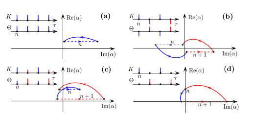
<figcaption class="paper-figure-caption"><b>Fig 1.</b> FIG. 2. Schematic of the cavity-field evolution associated with dif- ferent instability channels and their competition. (a) Symmetric in- stability channel. (b) Antisymmetric instability channel. (c) Mixed response with a dominant symmetric component, giving rise to reso- nant transport. (d) Balanced competition between the two channels, leading to feedback-induced antiresonance. The cavity-field trajec- tory in the complex plane is shown together with the correspond- ing stroboscopic kick strength and density order parameter. Solid (dashed) lines denote free evolution (kick) processes.</figcaption>
</figure>
<figure class="paper-figure-card">
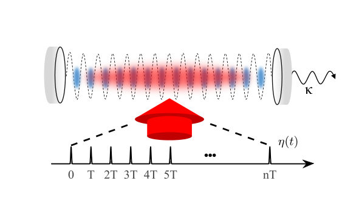
<figcaption class="paper-figure-caption"><b>Fig 2.</b> FIG. 1. Schematic of the proposed setup. A quasi one-dimensional ultracold Bose gas trapped inside an optical cavity is driven by a periodically pulsed transverse pump field η(t).</figcaption>
</figure>
<figure class="paper-figure-card">
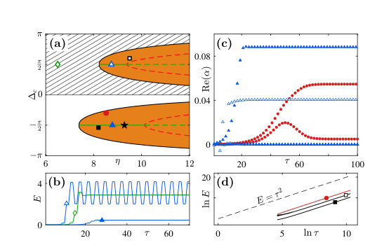
<figcaption class="paper-figure-caption"><b>Fig 3.</b> FIG. 3. Resonant kicking dynamics for ℏs = π and κ = 4. (a) Dynamical phase diagram in the η-∆c plane, showing the uni- form (white region) and Bessel dark (shaded region) phases be- low threshold, together with the resonant transport (orange regions) and feedback-induced antiresonance (green lines). Beyond the red dashed lines, the dynamics become increasingly sensitive to initial fluctuations. (b) Evolution of the atomic energy in the Bessel dark phase (diamond markers) and the antiresonant phase (triangle mark- ers). The antiresonance generally exhibits period-quadrupled atomic dynamics, which reduce to period-doubled for ∆c &lt; 0 and η below the star. (c) Stroboscopic evolution of the...</figcaption>
</figure>
<figure class="paper-figure-card">
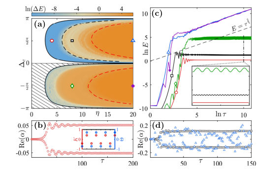
<figcaption class="paper-figure-caption"><b>Fig 4.</b> FIG. 4. Incommensurate kicking dynamics for ℏs = 6.8 and κ = 4. (a) Dynamical phase diagram in the η-∆c plane. White and shaded regions denote the uniform and finite-momentum dark phases, re- spectively. The color scale in superradiant phases shows the energy broadening over the interval τ ∈[8 · 104, 105], revealing crossovers from period-doubled localization to irregular localization and even- tually to subdiffusion. The black and red dashed lines (ln ∆E = −5 and 4) approximately separate these regimes. (b) Stroboscopic evo- lution of the cavity field in the period-doubled localized phase. In- set: the corresponding kick strength and density order parameter. (c) Condensate energy for...</figcaption>
</figure>
<figure class="paper-figure-card">
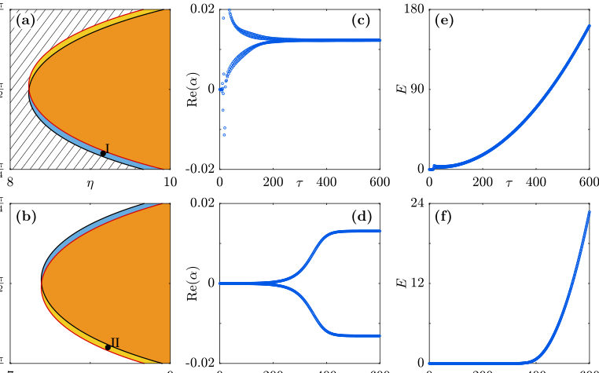
<figcaption class="paper-figure-caption"><b>Fig 5.</b> FIG. 5. The critical superradiant thresholds of symmetric and antisymmetric instability channels for resonant kicking ℏs = π. (a) and (b) The dynamical phase diagram for blue (∆c &gt; 0) and red (∆c &lt; 0) detuning. The black and red solid curves denote the superradiant thresholds for the symmetric and antisymmetric instability channels. (c) and (d) Stroboscopic evolution of the cavity field at τ = n, with parameters (η, ∆c) = (9.16, 0.3π) and (η, ∆c) = (8.22, −0.7π) marked by the black solid circles in (a) and (b), respectively. Both are governed by a single instability channel. (e) and (f) Time evolution of the atomic kinetic energy E corresponding to (c) and (d), respectively. The cavity loss...</figcaption>
</figure>
</div>

<p><strong>Summary.</strong> This paper analyzes a quantum kicked rotor system where the driving strength is self-adaptively controlled by the cavity field. By analyzing the competition between symmetric and antisymmetric instabilities, the authors predict novel dynamical phases, such as emergent antiresonances and robust localized states. This establishes a general theory for how feedback fundamentally controls quantum chaos and transport in driven quantum matter.</p>
<p><strong>Why it may be interesting.</strong> This work provides a powerful, general framework for understanding how feedback loops can stabilize or destabilize quantum coherence and transport in driven systems, which is highly relevant to quantum optics and cavity QED.</p>
<details>
<summary>Detailed structure</summary>
<p><strong>Main problem.</strong> The study investigates nonequilibrium dynamics in driven quantum systems where the driving field (kicking strength) is self-adaptively generated by the system's own state via cavity-mediated feedback.</p>
<p><strong>Main result.</strong> The feedback mechanism creates distinct dynamical phases, including resonant ballistic transport, emergent antiresonances, and robust period-doubled localized states, which fundamentally reshape quantum transport and temporal order.</p>
<p><strong>Method.</strong> The analysis employs Floquet stability analysis by linearizing the coupled atom-cavity equations of motion around the normal phase, determining stability via Floquet multipliers.</p>
<p><strong>Model / system.</strong> The system is a self-adaptive Floquet model based on a quantum kicked rotor (QKR), realized using an ultracold Bose gas coupled to an optical cavity driven by a pulsed pump.</p>
<p><strong>Key observables.</strong> Atomic energy growth ($E \propto 	au^2$ vs. $ au^{2/3}$), cavity field stroboscopic evolution, and temporal correlation functions $C(\ell)$.</p>
<p><strong>Important parameters / regimes.</strong> Feedback strength ($\eta$), cavity detuning ($\Delta_c$), and the kicking strength ($\hbar_s$), analyzed in both resonant and incommensurate regimes.</p>
<p><strong>Assumptions / limitations.</strong> The analysis relies on identifying and analyzing the competition between symmetric and antisymmetric instability channels, and uses linearization techniques for stability analysis.</p>
<p><strong>Figures summary.</strong> Figures illustrate the dynamical phase diagrams in the $\eta-\Delta_c$ plane for both resonant and incommensurate kicking, alongside time evolution plots showing energy growth and cavity field behavior for different phases.</p>
<p><strong>Paper structure.</strong> The paper progresses by first defining the coupled atom-cavity dynamics and the feedback mechanism. It then analyzes stability via Floquet theory, detailing specific outcomes for resonant kicking (antiresonance) and incommensurate kicking (period-doubling/subdiffusion), culminating in a general framework for self-adaptive dynamics.</p>
</details>
<details>
<summary>Abstract</summary>
<p>We introduce a self-adaptive Floquet system based on a quantum kicked rotor, in which the kicking strength itself becomes a dynamical variable generated self-consistently through cavity-mediated feedback. A superradiant transition gives rise to cavity-mediated kicking and two competing instability channels, symmetric and antisymmetric, which provide a unified organizing principle for the nonequilibrium Floquet phases. For resonant kicking, their competition produces double-kick dynamics that support resonant ballistic transport and an emergent antiresonance with period-quadrupled rotor evolution, arising from a balance between the two instability channels. Remarkably, for incommensurate kicking, the antisymmetric instability stabilizes a robust period-doubled localized phase with persistent subharmonic dynamics despite the underlying incommensurate driving, revealing localized temporal order absent in conventional kicked rotors. As the feedback strength increases, correlated temporal fluctuations progressively suppress quantum interference, driving crossovers from period-doubled localization to irregular localization and eventually to subdiffusive transport. Our results establish a general framework for self-adaptive quantum-chaotic dynamics and demonstrate how dynamical feedback can fundamentally reshape transport, localization, and temporal order in driven quantum systems.</p>
</details>
<p><sub><a href="#top">↑ back to top</a></sub></p>

<p><a id="paper-2609.22425"></a></p>
<h3 id="gibbs-resampling-transitions-and-structured-fast-measurement-protocols"><a href="http://arxiv.org/abs/2609.22425v1">Gibbs resampling transitions and structured fast-measurement protocols</a></h3>
<p><strong>Authors:</strong> Daan Timmers, Benedikt Placke, Siddharth A. Parameswaran<br>
<strong>Type:</strong> theory · <strong>Category:</strong> statistical mechanics · <strong>PDF:</strong> <a href="https://arxiv.org/pdf/2609.22425v1">https://arxiv.org/pdf/2609.22425v1</a><br>
<strong>Analysis basis:</strong> full PDF text, analyzed in chunks
<strong>Topic relevance:</strong> 🔥 <code>quantum measurements</code> <strong>4/5</strong> · <code>analog quantum simulation</code> <strong>3/5</strong> · <code>correlated / nonlocal dissipation</code> <strong>3/5</strong> · <code>driven-dissipative phase transition</code> <strong>3/5</strong> · <code>non-equilibrium universality</code> <strong>3/5</strong> · <code>methods for driven-dissipative</code> <strong>2/5</strong> · <code>scars &amp; prethermalization</code> <strong>2/5</strong> · <code>Keldysh / 2PI / non-Gaussian methods</code> <strong>1/5</strong></p>
<div class="figure-strip-hint">↔ Scroll figures horizontally</div>
<div class="paper-figures-scroll">
<figure class="paper-figure-card">
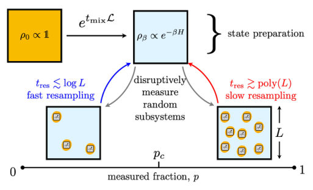
<figcaption class="paper-figure-caption"><b>Fig 1.</b> FIG. 1. “Gibbs Resampling”. A specified quantum state (e.g. a thermal state of a local Hamiltonian) can be prepared from an arbitrary input using a local Lindbladian L in the mixing time tmix. A disruptive measurement is classically modeled by resetting a fraction p of the system to a random state. The local dynamics then recovers the initial ordered state in the “resampling time” tres(p). The scaling of tres(p) with system size L may undergo a transition as p is varied.</figcaption>
</figure>
<figure class="paper-figure-card">
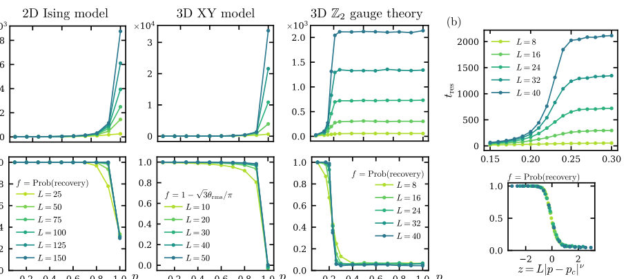
<figcaption class="paper-figure-caption"><b>Fig 2.</b> FIG. 2. (a) A comparison of resampling time and logical fidelity in the 2D Ising model, the 3D XY model, and 3D classical Z2 gauge theory, as a function of measurement probability p. In the two models with a local order parameter, the finite size scaling indicates that resampling is rapid, with fidelity close to unity, for any p &lt; 1, while for the gauge theory there is a resampling transition. (b) A closer look at the resampling transition. Above: resampling time as a function of p near the transition. Below: scaling collapse of logical fidelity. We assume ν = 1, and find pc ≈0.226.</figcaption>
</figure>
<figure class="paper-figure-card">
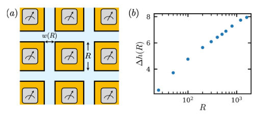
<figcaption class="paper-figure-caption"><b>Fig 3.</b> FIG. 3. (a) A structured fast-measurement protocol: all spins in boxes of size R are measured, while keeping spins in a “collar” of width w(R) around every box unmeasured. (b) Maximum excursion as a function of box size in the 2D Ising model evolving under Glauber dynamics at T ≈0.74 Tc.</figcaption>
</figure>
</div>

<p><strong>Summary.</strong> This work analyzes the time required to restore an equilibrium quantum state after local measurements disrupt it, termed 'Gibbs resampling.' The authors find a critical distinction between systems with local versus non-local order parameters, predicting a sharp transition in recovery time for the latter. They propose a structured measurement protocol to mitigate this slow-down, offering insights into the robustness of quantum information storage.</p>
<p><strong>Why it may be interesting.</strong> The concept of 'resampling' dynamics after measurement is highly relevant to quantum error correction and quantum computation, as it quantifies the overhead required to extract meaningful information from a noisy or partially measured quantum state.</p>
<details>
<summary>Detailed structure</summary>
<p><strong>Main problem.</strong> The paper investigates the efficiency of 'Gibbs resampling'—the time required to recover an equilibrium quantum state after it has been disrupted by local measurements. This recovery time is distinct from standard mixing or autocorrelation times.</p>
<p><strong>Main result.</strong> A 'resampling transition' exists in systems with non-local order parameters (like gauge theories), causing the recovery time to slow dramatically as the measurement fraction increases. Conversely, systems with local order parameters maintain rapid recovery times.</p>
<p><strong>Method.</strong> The study uses effective classical models emulating quantum measurements, employing Glauber dynamics and analyzing the scaling of the resampling time ($    au_{    ext{res}}$) based on the fraction of measured sites ($p$).</p>
<p><strong>Model / system.</strong> The analysis covers various classical spin systems, including the 2D Ising model, 3D XY model, and 3D $\mathbb{Z}_2$ lattice gauge theory. The disruption is modeled by resetting a fraction $p$ of the system's degrees of freedom to a random state.</p>
<p><strong>Key observables.</strong> Resampling time ($ au_{    ext{res}}$), logical fidelity ($f$), and the local order parameter ($m$).</p>
<p><strong>Important parameters / regimes.</strong> Fraction of measured sites ($p$), linear system size ($L$), and the presence/nature of the order parameter (local vs. non-local).</p>
<p><strong>Assumptions / limitations.</strong> The classical results are discussed as proxies for the quantum case, and the rapid resampling for local order parameters relies on the confinement of defects due to the local order parameter.</p>
<p><strong>Figures summary.</strong> Figures compare $\tau_{	ext{res}}$ vs. $p$ for different models, showing a clear transition for the gauge theory but not for the ferromagnet. Another figure illustrates a structured measurement protocol using boxes and collars.</p>
<p><strong>Paper structure.</strong> The paper first defines the problem of Gibbs resampling, then analyzes specific models (Ising, Gauge Theory) to establish a dichotomy based on the order parameter type. It then proposes a structured measurement protocol designed to maintain rapid recovery across both classes of systems.</p>
</details>
<details>
<summary>Abstract</summary>
<p>Quantum Gibbs sampling algorithms generalize classical Markov chain Monte Carlo (cMCMC) methods, and prepare thermal states on quantum computers by implementing local dissipative evolution for a mixing time $t_{\rm mix}$. Since quantum measurements disrupt the prepared state, the rate of extracting unbiased information from the system depends on the recovery of the underlying thermal correlations. The corresponding ''Gibbs resampling'' time $t_{\rm res}$ is distinct both from $t_{\rm mix}$ and from the autocorrelation time relevant to cMCMC sampling. We study this problem in effective classical models that emulate disruptive quantum measurements of local observables on extensive subsystems. When such subsystems are chosen randomly, in models with non-local order parameters we uncover a ''resampling transition'' as a function of the fraction of sites $p$ that are measured, from $t_{\rm res}\propto \log L$ for small $p$ to $t_{\rm res}\propto {\rm poly} L$ for large $p$, in systems of linear size $L$. We argue that this transition is generically absent in systems with local order parameters, and relate this dichotomy to one between the coarsening of initial states that break 1- and 0-form symmetries under Glauber dynamics. Finally, we devise a structured fast-measurement protocol that evades slow resampling even with non-local order parameters, while leaving only a vanishing fraction of all sites unmeasured.</p>
</details>
<p><sub><a href="#top">↑ back to top</a></sub></p>

<p><a id="paper-2609.23870"></a></p>
<h3 id="hidden-collision-statistics-in-bosonic-heat-transport-superthermal-correlations-at-fixed-mean-current"><a href="http://arxiv.org/abs/2609.23870v1">Hidden collision statistics in bosonic heat transport: Superthermal correlations at fixed mean current</a></h3>
<p><strong>Authors:</strong> Iu. A. Nosal, A. E. Teretenkov<br>
<strong>Type:</strong> theory · <strong>Category:</strong> statistical mechanics · <strong>PDF:</strong> <a href="https://arxiv.org/pdf/2609.23870v1">https://arxiv.org/pdf/2609.23870v1</a><br>
<strong>Analysis basis:</strong> full PDF text, analyzed in chunks
<strong>Topic relevance:</strong> 🔥 <code>Full counting statistics</code> <strong>4/5</strong> · <code>methods for driven-dissipative</code> <strong>3/5</strong> · <code>quantum measurements</code> <strong>3/5</strong> · <code>Keldysh / 2PI / non-Gaussian methods</code> <strong>2/5</strong> · <code>correlated / nonlocal dissipation</code> <strong>2/5</strong> · <code>driven-dissipative phase transition</code> <strong>2/5</strong> · <code>non-equilibrium universality</code> <strong>2/5</strong> · <code>analog quantum simulation</code> <strong>1/5</strong></p>
<div class="figure-strip-hint">↔ Scroll figures horizontally</div>
<div class="paper-figures-scroll">
<figure class="paper-figure-card">
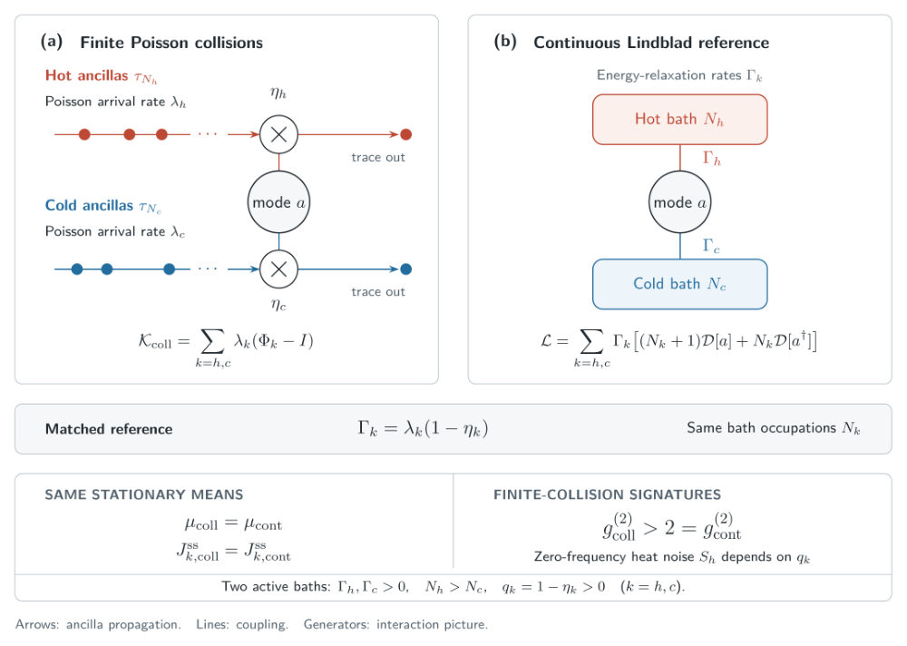
<figcaption class="paper-figure-caption"><b>Fig 1.</b> FIG. 1. Finite Poisson collision reservoirs and their matched continuous Lindblad reference. (a) Independent Poisson streams supply fresh thermal ancillas in states τNk with mean occupations Nk at arrival rates λk, k ∈{h, c}. Each ancilla interacts once with mode a through a beam-splitter unitary with system transmissivity ηk and is then traced out. Circles marked with a cross denote the beam-splitter interactions. (b) The continuous reference uses the same bath occupations and energy-relaxation rates Γk = λk(1−ηk). For equal initial mean occupations, the models have identical µ(t) and bath-resolved mean heat currents Jk(t); their stationary mean occupations and currents also coincide, with...</figcaption>
</figure>
<figure class="paper-figure-card">
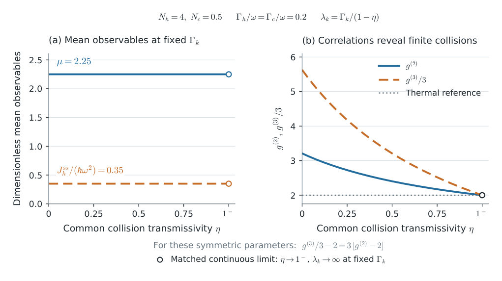
<figcaption class="paper-figure-caption"><b>Fig 2.</b> FIG. 2. Mean observables and stationary correlations at fixed effective rates. The reservoirs have mean occupations Nh = 4, Nc = 0.5, effective rates Γh/ω = Γc/ω = 0.2, and common collision transmissivity ηh = ηc = η. As η varies, the Poisson arrival rates satisfy λk = Γk/(1 −η). (a) The stationary occupation µ = 2.25 and dimensionless hot heat current Jss h /(ℏω2) = 0.35 remain unchanged. (b) The stationary correlations g(2) (solid) and g(3)/3 (dashed) approach the common thermal reference value 2 (dotted). Dividing g(3) by 3 places its thermal value 6 at the same ordinate as g(2) = 2. For these symmetric parameters, g(3)/3 −2 = 3[g(2) −2]. Colored curves follow from the exact stationary...</figcaption>
</figure>
<figure class="paper-figure-card">
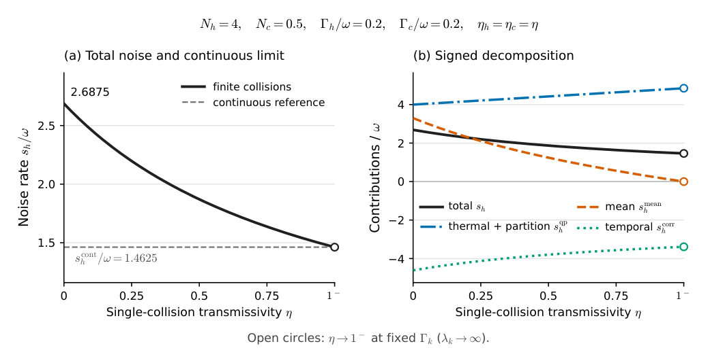
<figcaption class="paper-figure-caption"><b>Fig 3.</b> FIG. 3. Hot-stream heat noise of the ideal stationary event-resolved TPM record for Nh = 4, Nc = 0.5, and ηh = ηc = η, at fixed effective rates Γk = λk(1 −η), with Γh/ω = Γc/ω = 0.2. All noise rates are plotted in units of ω, where Sh = (ℏω)2sh. (a) Exact total noise (solid black) and the matched continuous-bath reference (dashed gray), scont h /ω = 1.4625. (b) Additive decomposition sh = sloc,mean h +sloc,var h +scov h into the local conditional-mean term (dashed orange), the local conditional-variance term containing thermal and beam-splitter partition fluctuations (dash-dotted blue), and the covariance-response term (dotted green). The solid black curve shows their sum. The first two...</figcaption>
</figure>
<figure class="paper-figure-card">
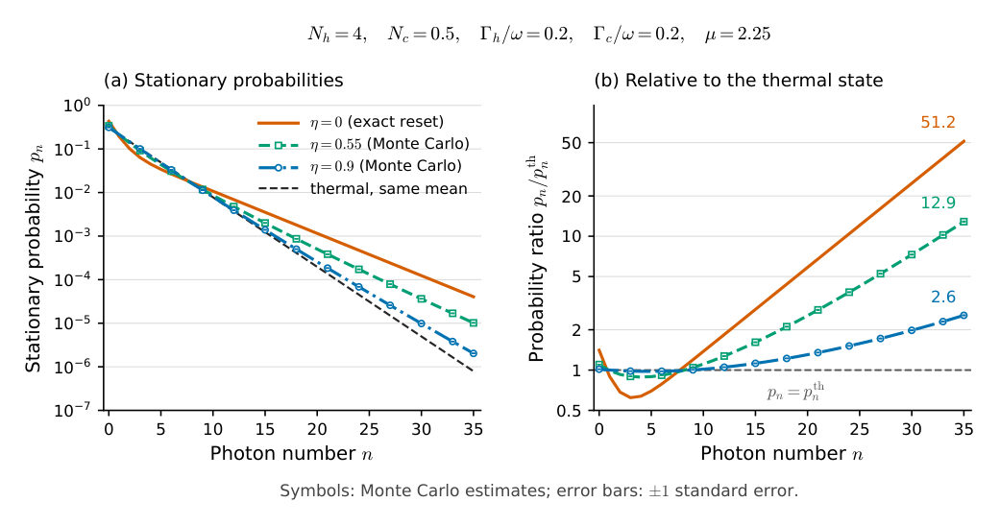
<figcaption class="paper-figure-caption"><b>Fig 4.</b> FIG. 4. Stationary photon-number distribution of the collision model for Nh = 4, Nc = 0.5, and ηh = ηc = η, at fixed effective rates Γk = λk(1 −η), with Γh/ω = 0.2 and Γc/ω = 0.2. All cases have the same exact mean occupation µ = 2.25. (a) Probabilities pn and the matched thermal reference pth n = µn/(1 + µ)n+1 (dashed black). (b) Ratios pn/pth n ; the dashed horizontal line denotes the thermal reference. Both vertical axes are logarithmic. The η = 0 curve is evaluated analytically from the full-reset mixture pn = P</figcaption>
</figure>
<figure class="paper-figure-card">
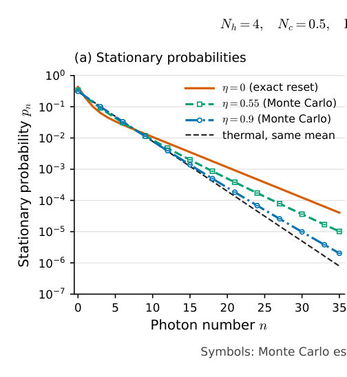
<figcaption class="paper-figure-caption"><b>Fig 5.</b> Fig. 4 shows a broader distribution for stronger collisions than for the thermal state with the same mean. The dis- played tails are numerical results for the stated parameter set; we do not infer a universal tail theorem from them.</figcaption>
</figure>
</div>

<p><strong>Summary.</strong> This paper analyzes bosonic heat transport through a system undergoing discrete, stochastic collisions with thermal baths. It demonstrates that while the average energy flow can be made to match a continuous model, the higher-order statistical correlations, such as heat noise, retain unique signatures dependent on the finite collision strengths. This highlights the power of fluctuation measurements to probe the microscopic details of non-equilibrium quantum processes.</p>
<p><strong>Why it may be interesting.</strong> This work is highly relevant for AMO and open quantum systems as it provides a rigorous framework for distinguishing between different physical mechanisms (discrete vs. continuous) in energy transport using fluctuation measurements, which is a key area in quantum thermodynamics.</p>
<details>
<summary>Detailed structure</summary>
<p><strong>Main problem.</strong> The paper investigates hidden collision statistics in bosonic heat transport, specifically examining how fluctuations (higher-order correlations) can reveal details about the underlying physical process even when the average energy transport matches a simpler continuous model.</p>
<p><strong>Main result.</strong> While the mean energy and mean heat currents match between the discrete collision model and the continuous Lindblad reservoir, the higher-order correlations and heat noise retain a dependence on the finite collision strengths, proving that average measurements can mask underlying statistical differences.</p>
<p><strong>Method.</strong> The analysis uses theoretical derivations involving compound-Poisson semigroups, moment recursions, and comparison between discrete collision dynamics and continuous Lindblad master equations.</p>
<p><strong>Model / system.</strong> The model consists of a single bosonic mode coupled to hot and cold thermal ancillas via finite beam-splitter collisions. The dynamics are governed by a master equation representing a Poisson mixture of event channels.</p>
<p><strong>Key observables.</strong> Mean-occupation dynamics, bath-resolved mean heat currents, higher-order correlations ($g^{(m)}$), and zero-frequency heat noise ($S_h$).</p>
<p><strong>Important parameters / regimes.</strong> Collision transmissivity ($\eta_k$), collision strength ($q_k$), and the temperature contrast between the hot and cold baths.</p>
<p><strong>Assumptions / limitations.</strong> The comparison is made between the discrete collision process and its matched continuous Lindblad reservoir limit; the authors explicitly note that they do not derive a full fluctuation symmetry.</p>
<p><strong>Figures summary.</strong> Figure 1 compares the finite Poisson collision reservoir (discrete events) against the matched continuous Lindblad reference, showing that the collision model retains higher-order correlations and heat noise dependent on collision strengths.</p>
<p><strong>Paper structure.</strong> The paper develops from establishing the general collision dynamics via a compound-Poisson semigroup, deriving the stationary state via random affine fixed points, and finally comparing the resulting mean observables and higher-order cumulants against the continuous limit.</p>
</details>
<details>
<summary>Abstract</summary>
<p>Reservoirs with the same mean relaxation rate can be indistinguishable at the level of average energy transport while producing different fluctuations. We study a bosonic mode coupled to hot and cold Poisson streams of thermal ancillas through finite beam-splitter collisions. The averaged evolution is a compound-Poisson semigroup generated by finite Gaussian event channels. Its nonequilibrium steady state is an exact mixture of thermal states governed by a random affine fixed point. Consequently, the mean-occupation dynamics and bath-resolved mean heat currents coincide with those of the matched continuous Lindblad reservoir, whereas higher correlations retain the collision strength. For equal collision transmissivities, we derive an exact superthermal bunching law controlled by the temperature contrast and collision strength. We also obtain the asymptotic rates of the first two heat cumulants for an ideal stationary event-resolved two-point-measurement record and separate local one-collision contributions from temporal correlations. Fock-space diagonalization and Monte Carlo trajectories validate the formulas and connect full resets to the weak-collision Gaussian limit.</p>
</details>
<p><sub><a href="#top">↑ back to top</a></sub></p>

<p><a id="paper-2609.23429"></a></p>
<h3 id="liouvillian-response-for-temporal-information-in-quantum-reservoir-computing"><a href="http://arxiv.org/abs/2609.23429v1">Liouvillian Response for Temporal Information in Quantum Reservoir Computing</a></h3>
<p><strong>Authors:</strong> Jiande Cao, Rui-Yang Gong, Zhongjin Lin, Yexiong Zeng, Ze-Liang Xiang<br>
<strong>Type:</strong> theory · <strong>Category:</strong> quantum information and computing · <strong>PDF:</strong> <a href="https://arxiv.org/pdf/2609.23429v1">https://arxiv.org/pdf/2609.23429v1</a><br>
<strong>Analysis basis:</strong> full PDF text, analyzed in chunks
<strong>Topic relevance:</strong> 🔥 <code>quantum measurements</code> <strong>4/5</strong> · <code>correlated / nonlocal dissipation</code> <strong>3/5</strong> · <code>driven-dissipative phase transition</code> <strong>3/5</strong> · <code>methods for driven-dissipative</code> <strong>3/5</strong> · <code>Keldysh / 2PI / non-Gaussian methods</code> <strong>2/5</strong> · <code>analog quantum simulation</code> <strong>2/5</strong> · <code>non-equilibrium universality</code> <strong>2/5</strong></p>
<div class="figure-strip-hint">↔ Scroll figures horizontally</div>
<div class="paper-figures-scroll">
<figure class="paper-figure-card">
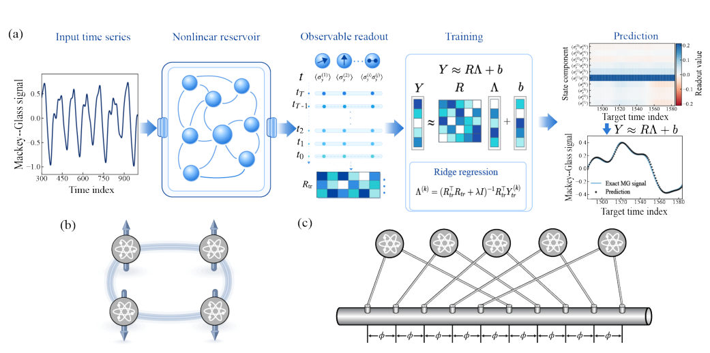
<figcaption class="paper-figure-caption"><b>Fig 1.</b> FIG. 1. (a) Standard quantum reservoir computing workflow. A Mackey–Glass signal is injected into a nonlinear open quantum reservoir; the quantum state is then converted into reservoir features through observable readouts; finally, only a linear readout layer is trained by ridge regression and used for target signal prediction. (b) Interacting-spin reservoir composed of coupled two-level systems. Spin–spin interactions generate nonlinear dynamical mixing, while relaxation and dephasing control the retention and dissipation of history information. (c) Multipoint-coupled waveguide QED reservoir, in which each spin couples to a one-dimensional waveguide at multiple spatially separated points....</figcaption>
</figure>
<figure class="paper-figure-card">
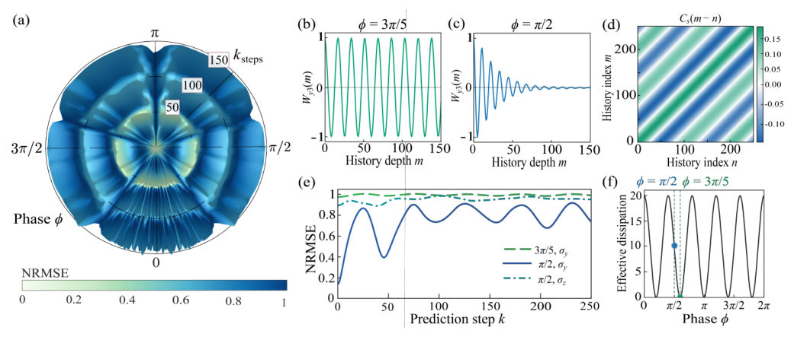
<figcaption class="paper-figure-caption"><b>Fig 2.</b> FIG. 2. (a) Prediction error as a function of the propagation phase ϕ and prediction steps for the five-spin braided multipoint- coupled waveguide QED reservoir in Fig. 1(c), using the σy readout. Narrow high-error stripes occur at ϕ = (2ℓ+ 1)π/5, with integer ℓ, where phase interference generates nondecaying collective modes. (b) First-order Volterra weight W (1) y,3(m) of the central spin at the decoherence-free phase ϕ = 3π/5. The persistent oscillations with memory depth m reveal a nondecaying input-excitable and readout-visible response pathway. (c) Same as (b), but at the dissipative phase ϕ = π/2. The decay of W (1) y,3(m) demonstrates the progressive loss of remote input-history...</figcaption>
</figure>
<figure class="paper-figure-card">
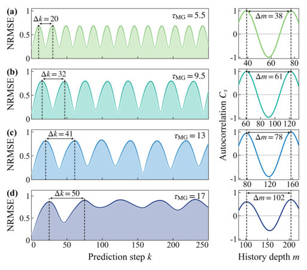
<figcaption class="paper-figure-caption"><b>Fig 3.</b> FIG. 3. Half-period locking of the NRMSE modulation to the temporal correlations of the input. (a)–(d) NRMSE as a function of prediction steps k (left) and normalized in- put autocorrelation Cs(m)/Cs(0) as a function of memory depth m (right) for Mackey–Glass inputs with delay param- eters τMG = 5.5, 9.5, 13, and 17, respectively. In each panel, the dashed vertical lines indicate two neighboring max- ima, and the horizontal arrows define the corresponding peak spacings ∆k and ∆m. Across all four input sequences, the NRMSE modulation locks to approximately half the domi- nant autocorrelation period, ∆k ≃∆m/2, consistent with the quadratic dependence of the prediction error on the target-...</figcaption>
</figure>
<figure class="paper-figure-card">
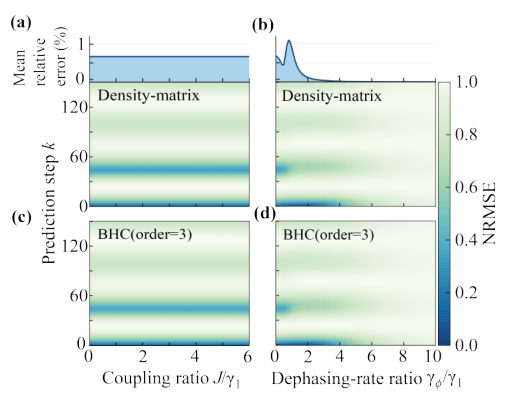
<figcaption class="paper-figure-caption"><b>Fig 4.</b> FIG. 4. BHC reconstruction of Mackey–Glass prediction per- formance in a four-spin XXZ-chain reservoir with σx readout. (a),(b) NRMSE obtained from direct density-matrix evolution followed by ridge-regression training. (c),(d) Corresponding BHC reconstruction including Volterra contributions up to third order, q ≤3. The left and right columns show scans of the spin-coupling ratio J/γ1 and the pure-dephasing ratio γϕ/γ1, respectively, where γ1 is the relaxation rate defined in Eq. (5). The vertical axis gives the prediction step k. The curves above each column show the mean relative discrepancy between the direct and reconstructed NRMSE, demonstrat- ing the accuracy of the low-order BHC...</figcaption>
</figure>
<figure class="paper-figure-card">
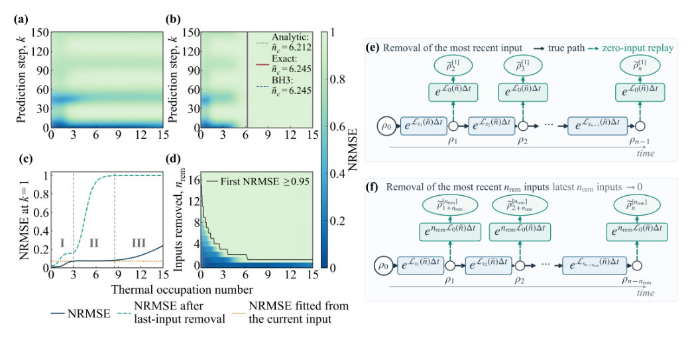
<figcaption class="paper-figure-caption"><b>Fig 5.</b> FIG. 5. Temperature-induced loss of historical response in the four-spin XX-Ising reservoir with xyz readout. The bath temperature is parametrized by the thermal occupation ¯n. (a) Prediction NRMSE of the original reservoir. (b) NRMSE after removing the contribution of the most recent input. Vertical lines indicate the analytical, exact, and third-order BHC (q ≤3) estimates of the critical occupation ¯nc, defined by NRMSE(k = 1) ≥0.95. (c) NRMSE at k = 1 for the original reservoir, after last-input removal, and for a predictor constructed solely from the most recent input. The dashed boundaries distinguish (I) processing that retains input history, (II) crossover to a last-input-dominated...</figcaption>
</figure>
</div>

<p><strong>Summary.</strong> This paper develops a rigorous, microscopic framework to link the dynamics of open quantum systems to their performance in Quantum Reservoir Computing. By decomposing system weights and analyzing the role of Liouvillian modes, the authors show that computational success depends on specific, measurable properties of the system's information flow. The results provide actionable principles for engineering quantum reservoirs using techniques like weak measurement and feedback control.</p>
<p><strong>Why it may be interesting.</strong> This work provides deep, quantitative insights into how the underlying physics of open quantum systems dictates their utility as computational substrates, offering concrete engineering principles for quantum information processing.</p>
<details>
<summary>Detailed structure</summary>
<p><strong>Main problem.</strong> To establish a microscopic framework connecting the open-system dynamics (Liouvillian evolution) of quantum reservoirs to their actual computational performance in Quantum Reservoir Computing (QRC).</p>
<p><strong>Main result.</strong> The framework shows that useful dynamic responses must be input-generated, readout-visible, target-correlated, and resolvable. Furthermore, weak measurement and delayed feedback can actively control and enhance the flow of task-relevant historical information.</p>
<p><strong>Method.</strong> The authors develop a microscopic response-to-performance framework by decomposing Volterra weights and analyzing the system's evolution under Liouvillian dynamics, incorporating techniques for open-loop and closed-loop weight calculation.</p>
<p><strong>Model / system.</strong> The study uses open quantum systems as reservoirs, modeled by Liouvillian dynamics. Specific physical realizations include interacting Ising spin systems and multipoint-coupled waveguide QED systems, all driven by external inputs.</p>
<p><strong>Key observables.</strong> Liouvillian modes, covariance modes, Volterra weights ($W^{(q)}$), NRMSE, and Memory Capacity (MC).</p>
<p><strong>Important parameters / regimes.</strong> Regularization scale, feedback parameter ($eta$), and the structure of the input drive ($s_n$).</p>
<p><strong>Assumptions / limitations.</strong> The analysis relies on approximations such as the Markov approximation for the waveguide and assumes that the classical feedback loop preserves the structure of the readout projection.</p>
<p><strong>Figures summary.</strong> Not specified.</p>
<p><strong>Paper structure.</strong> The paper progresses by first establishing the general framework connecting Liouvillian dynamics to performance. It then details the application to specific physical models (Ising, QED), deriving the mathematical tools for open-loop and closed-loop weight calculations, and finally analyzing how feedback and measurement modify the weight structure to improve task performance.</p>
</details>
<details>
<summary>Abstract</summary>
<p>Open quantum systems offer a physical substrate for temporal information processing in quantum reservoir computing, yet the microscopic mechanisms linking their dynamics to computational performance remain unclear. Here we establish a microscopic response-to-performance framework that connects Liouvillian dynamics directly to task performance. We decompose observable Volterra weights as $W^{(q)}=BH^{(q)}$, separating internal input-history pathways from their readout visibility, and show that a dynamical response contributes to a task only if it is input-generated, readout-visible, target-correlated, and resolvable above the regularization scale. This framework reveals how Liouvillian modes govern the retention and propagation of task-relevant information, while symmetries determine which components remain visible to the readout. It further establishes how distinct covariance modes encode different temporal information structures and how system parameters and processing protocols can reshape their contributions to improve QRC performance. Thermalization drives the reservoir from processing that retains input history to a response dominated by the most recent input before regularization suppresses the residual information. We finally show that weak measurement can activate task-relevant covariance modes by lifting symmetry-imposed channel equivalence, whereas delayed feedback creates controlled return pathways for historical information. These results establish a microscopic connection between open-system dynamics and computational performance, providing principles for engineering task-relevant information flow in quantum reservoirs.</p>
</details>
<p><sub><a href="#top">↑ back to top</a></sub></p>

<p><a id="paper-2609.23195"></a></p>
<h3 id="localized-charges-reset-noise-and-boundary-memory-in-matrix-product-conserving-quantum-chains"><a href="http://arxiv.org/abs/2609.23195v1">Localized charges, reset noise, and boundary memory in matrix-product-conserving quantum chains</a></h3>
<p><strong>Authors:</strong> Ron Rubin<br>
<strong>Type:</strong> both · <strong>Category:</strong> statistical mechanics · <strong>PDF:</strong> <a href="https://arxiv.org/pdf/2609.23195v1">https://arxiv.org/pdf/2609.23195v1</a><br>
<strong>Analysis basis:</strong> full PDF text, analyzed in chunks
<strong>Topic relevance:</strong> 🔥 <code>methods for driven-dissipative</code> <strong>4/5</strong> · <code>correlated / nonlocal dissipation</code> <strong>3/5</strong> · <code>driven-dissipative phase transition</code> <strong>3/5</strong> · <code>non-equilibrium universality</code> <strong>2/5</strong> · <code>quantum measurements</code> <strong>2/5</strong> · <code>scars &amp; prethermalization</code> <strong>2/5</strong> · <code>Keldysh / 2PI / non-Gaussian methods</code> <strong>1/5</strong> · <code>analog quantum simulation</code> <strong>1/5</strong></p>
<div class="figure-strip-hint">↔ Scroll figures horizontally</div>
<div class="paper-figures-scroll">
<figure class="paper-figure-card">
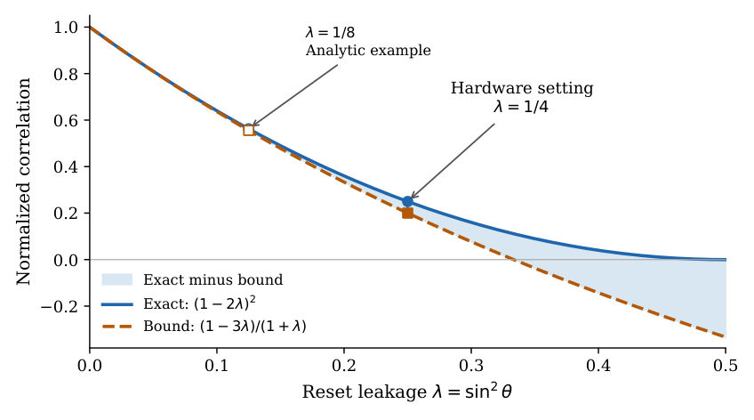
<figcaption class="paper-figure-caption"><b>Fig 1.</b> Figure 1: Exact normalized correlation and the general lower bound for the two-qubit family. The shaded difference is 4λ3/(1 + λ). The marked hardware setting is λ = 1/4, where the exact value is 0.25 and the bound is 0.20. The additional marker at λ = 1/8 is an analytic example; it was not a hardware setting. These curves are predictions, not experimental fits.</figcaption>
</figure>
<figure class="paper-figure-card">
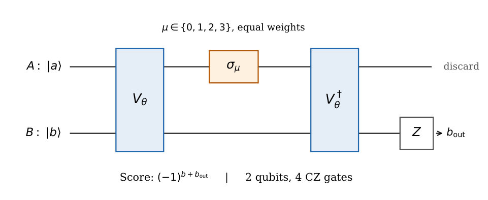
<figcaption class="paper-figure-caption"><b>Fig 2.</b> Figure 2: Reset-echo protocol. The four computational-basis inputs and four Pauli masks are equally weighted. The final score is (−1)bin+bout. The protected setting uses θ = π/6; the control uses θ = π/4. No-reset references replace the mask by the identity while retaining the compiled forward/inverse gate pattern. Qubit A is not measured.</figcaption>
</figure>
<figure class="paper-figure-card">

<figcaption class="paper-figure-caption"><b>Fig 3.</b> Figure 3: IBM measurements and ideal predictions. Filled circles show observed means with the predeclared simultaneous 95% intervals; open diamonds show ideal values. The dashed 0.20 line in the reset panel is the theorem’s benchmark for the protected setting only. The no-reset panel uses a separate vertical scale to show implementation error. No fit or visibility correction is applied.</figcaption>
</figure>
</div>

<p><strong>Summary.</strong> This paper develops a rigorous mathematical framework to quantify how quantum information persists in a chain subject to repeated noise and resets. It establishes a finite-time correlation bound that quantifies memory retention, showing an exponential decay rate dependent on the noise profile. The results are supported by theoretical proofs and are benchmarked against experimental measurements on quantum hardware.</p>
<p><strong>Why it may be interesting.</strong> This work provides rigorous, non-averaged bounds on quantum memory, which is crucial for understanding decoherence and information preservation in open quantum systems, bridging theoretical bounds with experimental feasibility.</p>
<details>
<summary>Detailed structure</summary>
<p><strong>Main problem.</strong> The paper addresses how long local quantum information (memory) can be retained in a quantum chain when the system undergoes repeated randomizing or 'reset' operations at the boundaries.</p>
<p><strong>Main result.</strong> It derives a finite-time inequality that provides a quantitative correlation bound, showing that the memory retention decays exponentially with the distance from the noisy region.</p>
<p><strong>Method.</strong> The analysis combines theoretical bounds derived from random matrix products and the construction of a specific finite-time inequality relating readout overlap and accumulated leakage.</p>
<p><strong>Model / system.</strong> The model is a quantum chain whose basis states are defined by an ordered product of matrix labels, undergoing dynamics that are partially conserved and partially reset by boundary operations.</p>
<p><strong>Key observables.</strong> Conserved charge, readout overlap $\langle F, \Phi(F) 
angle$, accumulated squared leakage $\mathcal B$, and the root-mean-square localization error.</p>
<p><strong>Important parameters / regimes.</strong> The memory window size, the decay rate $\kappa$ (e.g., $e^{-r/1400}$ for a specific model), and the noise rate.</p>
<p><strong>Assumptions / limitations.</strong> The analysis relies on strong-irreducibility and proximality hypotheses on the label matrices, and the derived inequality holds for each circuit without averaging.</p>
<p><strong>Figures summary.</strong> No specific figure summaries are available, but the notes reference the structure of the proof and the comparison of measured correlations against theoretical bounds.</p>
<p><strong>Paper structure.</strong> The paper proceeds by first establishing localization properties using random matrix theory, then deriving the general finite-time inequality (Theorem 4.1), and finally applying this to specific models and discussing experimental verification.</p>
</details>
<details>
<summary>Abstract</summary>
<p>We construct boundary observables that retain memory for a quantified time window in quantum chains whose basis configurations carry a conserved ordered product of matrix labels. Under strong-irreducibility and proximality hypotheses on the label matrices, projective contraction of random matrix products localizes a conserved charge in the root-mean-square over uniform basis configurations. A finite-time inequality then converts readout overlap and reset leakage into a correlation bound: for a conserved reference observable $H$, a readout $F$, accumulated squared leakage $\mathcal B$, and the normalized Hilbert-Schmidt inner product, $\langle F,Φ(F)\rangle\ge 2\langle H,F\rangle^2/(\|H\|_2^2+\mathcal B)-\|F\|_2^2$. Here $Φ$ is a sequence of conserving channels and partial resets. The bound holds for each such circuit, without averaging its gates. It yields an exponential memory window in the distance from the noisy region, with quantitative corrections for spatially distributed noise and imperfect conservation. For a thirteen-state elementary-matrix model, exact polynomial certificates give root-mean-square localization error $e^{-r/1400}$ between the charge and its restriction to the last $r$ sites, and limiting variance at least $1/19$ for a rational charge. A related normalized-Gram charge gives an eight-site certificate retaining more than half the specified readout correlation through two boundary-reset rounds. Uniform depolarization imposes an inverse-noise-rate lifetime ceiling. A two-qubit IBM experiment illustrates the general reset inequality; it does not realize the matrix-product chain. We provide proofs, exact certificate programs, and an independent recount of the archived experimental outcomes.</p>
</details>
<p><sub><a href="#top">↑ back to top</a></sub></p>

<p><a id="paper-2609.24381"></a></p>
<h3 id="versatile-quantum-machine-learning-with-an-ultra-low-power-photonic-quantum-reservoir-computer"><a href="http://arxiv.org/abs/2609.24381v1">Versatile Quantum Machine Learning with an Ultra-low Power Photonic Quantum Reservoir Computer</a></h3>
<p><strong>Authors:</strong> Wei Wang, Zan Tang, Menglong Fang, Daiqin Su, Mile Gu, Jayne Thompson, Lip Ket Chin, Hong Cai, Leong-Chuan Kwek, Ai-Qun Liu<br>
<strong>Type:</strong> both · <strong>Category:</strong> disordered systems and neural networks · <strong>PDF:</strong> <a href="https://arxiv.org/pdf/2609.24381v1">https://arxiv.org/pdf/2609.24381v1</a><br>
<strong>Analysis basis:</strong> full PDF text, analyzed in chunks
<strong>Topic relevance:</strong> 🔥 <code>quantum optics experiment</code> <strong>4/5</strong> · <code>QC/QI experiment</code> <strong>3/5</strong> · <code>analog quantum simulation</code> <strong>3/5</strong> · <code>interference shaping light</code> <strong>2/5</strong> · <code>methods for driven-dissipative</code> <strong>2/5</strong> · <code>quantum measurements</code> <strong>2/5</strong> · <code>Full counting statistics</code> <strong>1/5</strong> · <code>driven-dissipative phase transition</code> <strong>1/5</strong></p>
<div class="figure-strip-hint">↔ Scroll figures horizontally</div>
<div class="paper-figures-scroll">
<figure class="paper-figure-card">

<figcaption class="paper-figure-caption"><b>Fig 1.</b> Figure 3a shows the confusion matrix on the test set. A logistic regression model trained on the</figcaption>
</figure>
<figure class="paper-figure-card">

<figcaption class="paper-figure-caption"><b>Fig 2.</b> Fig. 1 Quantum reservoir computer based on a photonic quantum microprocessor (QPU). a, Conceptual system‑level architecture showing task data input, quantum‑state encoding and reservoir processing in the QPU, and classical linear readout. Representative tasks include static classification (top: handwritten digit “7” mapped to a probability distribution peaking at 7) and dynamic time‑series prediction (bottom: known history in blue, predicted trajectory in orange closely matching the ground‑truth future segment). b, Detailed workflow of the photonic QPU pipeline, including input encoding into squeezed states, multimode interferometric mixing in the reservoir core, and photon‑statistical...</figcaption>
</figure>
<figure class="paper-figure-card">

<figcaption class="paper-figure-caption"><b>Fig 3.</b> Fig. 2 Nonlinear mapping and fading memory in the QPU. a, Ground truth labels for the static XOR dataset. b, Predictions from a linear classifier trained directly on the raw input coordinates, yielding 33.3% test accuracy. c, Predictions from a linear readout trained on photon‑statistical features extracted by the QPU, achieving 98.3% test accuracy. d, Schematic of history and feedback mode allocation. Sixteen input modes are divided into T history modes encoding past inputs and F = 16 – T feedback modes receiving measurement outputs from the preceding cycle. e, Representative one‑step delayed reconstructions showing target and predicted outputs for five different T/F allocations. f, Memory...</figcaption>
</figure>
<figure class="paper-figure-card">

<figcaption class="paper-figure-caption"><b>Fig 4.</b> Fig. 3 Versatile task performance of the quantum reservoir computer. a, Confusion matrix for Iris dataset classification using photon‑statistical features generated by the reservoir, yielding 93.3% test accuracy (42 of 45 samples correctly classified). b, c, Training and test accuracy and log loss as functions of L‑BFGS optimization steps, showing convergence after ~50 iterations. d, Representative one‑step prediction of a Mackey–Glass time series with delay parameter 𝜏 = 17; target sequence in blue and experimental prediction in red. e, Predicted versus target values for the test sequence in d; points cluster along the diagonal, with mean squared error (MSE) of 0.0101. f,...</figcaption>
</figure>
<figure class="paper-figure-card">

<figcaption class="paper-figure-caption"><b>Fig 5.</b> Fig. 4 Free-running prediction under closed-loop operation. a, Target Mackey–Glass sequence (red) and corresponding 200‑step experimental free‑running prediction (blue). After initialization, each intermediate prediction is recursively fed back as input to the next step, without access to future target values. b, Cumulative MSE between prediction and target sequence. The dashed line marks the 0.2 error threshold used to define the prediction horizon. The cumulative error remains below this threshold for the first 27 steps, after which deviations grow. The red marker indicates the threshold crossing.</figcaption>
</figure>
</div>

<p><strong>Summary.</strong> This work presents an integrated photonic quantum reservoir computer capable of performing complex machine learning tasks like classification and time-series prediction. By encoding data into squeezed states and passing them through a passive optical reservoir, the system generates rich, nonlinear features. Crucially, it maintains high performance while operating in a zero-power, passive mode, suggesting a scalable hardware route for quantum AI.</p>
<p><strong>Why it may be interesting.</strong> The use of photon-statistical measurements and linear optics to generate nonlinear features is a physically grounded approach to quantum machine learning, relevant for researchers exploring quantum computation paradigms beyond standard qubit models.</p>
<details>
<summary>Detailed structure</summary>
<p><strong>Main problem.</strong> The paper addresses the challenge of creating a low-power, versatile quantum machine learning hardware platform capable of performing both static classification and dynamic time-series prediction.</p>
<p><strong>Main result.</strong> They demonstrated an integrated photonic quantum reservoir computer that achieves nonlinear mapping and fading memory without requiring active tuning of the core, showing high accuracy on multiple benchmark tasks.</p>
<p><strong>Method.</strong> The system encodes classical inputs into squeezed vacuum states, which pass through a linear-optical reservoir core. Nonlinear features are extracted via photon-statistical measurements, followed by a classical linear readout.</p>
<p><strong>Model / system.</strong> The physical platform is an integrated photonic quantum reservoir computer built on a silicon photonic chip, utilizing a multimode linear-optical interferometer core.</p>
<p><strong>Key observables.</strong> Classification accuracy (e.g., 98.3% for XOR, 93.3% for Iris), Mean Squared Error (MSE) for time-series prediction (e.g., 0.0101), and Memory Capacity ($M C_d$).</p>
<p><strong>Important parameters / regimes.</strong> The system performance is analyzed across different mode allocations (History $T$ vs. Feedback $F$) and critically, in the zero-bias state (zero active control power).</p>
<p><strong>Assumptions / limitations.</strong> The core assumption is that the quantum dynamics generate rich features, while classical computation performs the task-specific inference.</p>
<p><strong>Figures summary.</strong> Figures illustrate the overall architecture (RAM $
ightarrow$ CPU $
ightarrow$ QPU $
ightarrow$ Readout), compare classification accuracy (raw vs. QRC features), demonstrate versatility across tasks (Iris, Mackey-Glass), and show performance dependence on active control power.</p>
<p><strong>Paper structure.</strong> The paper details the architecture, first demonstrating nonlinear mapping via XOR classification, then establishing temporal memory capacity via IID recall, and finally proving versatility by applying the same setup to static classification (Iris) and continuous time-series prediction (Mackey-Glass).</p>
</details>
<details>
<summary>Abstract</summary>
<p>Integrated photonic microprocessors provide high-bandwidth, massively parallel linear computation, but realizing nonlinear feature maps and temporal memory remain key challenges for machine learning. Conventional approaches rely on active tuning and additional nonlinear elements, increasing architectural complexity and power overhead. Here we demonstrate an integrated photonic quantum reservoir computer that achieves nonlinear mapping, fading memory, and task versatility without active tuning of the reservoir core. The same chip supports accurate static classification, dynamic prediction, and stable autonomous forecasting, establishing broad utility across both classification and temporal inference tasks. Competitive performance is retained in the zero-bias state, where all on-chip phase shifters are unpowered, eliminating active control and reducing computational power consumption to zero. This passive operation highlights a scalable route to multifunctional machine-learning hardware, where large-scale photonic quantum processors can be repurposed as reservoirs without reconfiguring their internal optical networks. By combining quantum-state encoding, multimode interferometric mixing, and photon-statistical readout, this architecture provides a physically grounded paradigm for low-power, large-scale quantum reservoir computing.</p>
</details>
<p><sub><a href="#top">↑ back to top</a></sub></p>

<p><a id="paper-2609.24603"></a></p>
<h3 id="an-exact-operator-formulation-of-statistical-quasiparticle-theory-for-nonlinear-system-bath-coupling"><a href="http://arxiv.org/abs/2609.24603v1">An Exact Operator Formulation of Statistical Quasiparticle Theory for Nonlinear System-Bath Coupling</a></h3>
<p><strong>Authors:</strong> Yu Su, Yao Wang<br>
<strong>Type:</strong> theory · <strong>Category:</strong> statistical mechanics · <strong>PDF:</strong> <a href="https://arxiv.org/pdf/2609.24603v1">https://arxiv.org/pdf/2609.24603v1</a><br>
<strong>Analysis basis:</strong> full PDF text, analyzed in chunks
<strong>Topic relevance:</strong> 🔥 <code>methods for driven-dissipative</code> <strong>4/5</strong> · <code>Keldysh / 2PI / non-Gaussian methods</code> <strong>3/5</strong> · <code>correlated / nonlocal dissipation</code> <strong>3/5</strong> · <code>driven-dissipative phase transition</code> <strong>3/5</strong> · <code>non-equilibrium universality</code> <strong>2/5</strong> · <code>quantum measurements</code> <strong>2/5</strong></p>
<div class="figure-strip-hint">↔ Scroll figures horizontally</div>
<div class="paper-figures-scroll">
<figure class="paper-figure-card">

<figcaption class="paper-figure-caption"><b>Fig 1.</b> Low-resolution page preview, page 2</figcaption>
</figure>
<figure class="paper-figure-card">

<figcaption class="paper-figure-caption"><b>Fig 2.</b> Low-resolution page preview, page 3</figcaption>
</figure>
<figure class="paper-figure-card">

<figcaption class="paper-figure-caption"><b>Fig 3.</b> Low-resolution page preview, page 4</figcaption>
</figure>
<figure class="paper-figure-card">

<figcaption class="paper-figure-caption"><b>Fig 4.</b> Low-resolution page preview, page 5</figcaption>
</figure>
<figure class="paper-figure-card">

<figcaption class="paper-figure-caption"><b>Fig 5.</b> Low-resolution page preview, page 6</figcaption>
</figure>
</div>

<p><strong>Summary.</strong> This paper introduces a novel, exact operator formulation for statistical quasiparticle theory designed to handle nonlinear coupling between a quantum system and its environment. By constructing 'dissipatons' as explicit operators, the authors derive hierarchical equations of motion directly from the Liouville equation. This provides a powerful, non-perturbative tool for modeling open quantum dynamics beyond the limitations of traditional linear-coupling approximations.</p>
<p><strong>Why it may be interesting.</strong> This work provides a rigorous, operator-based alternative to standard methods (like HEOM or influence functionals) for describing non-Markovian dynamics in complex open quantum systems, which is crucial for understanding realistic quantum devices.</p>
<details>
<summary>Detailed structure</summary>
<p><strong>Main problem.</strong> The paper develops an exact operator formulation of statistical quasiparticle theory to handle open quantum systems coupled to an environment, specifically addressing the challenge of nonlinear system-bath coupling.</p>
<p><strong>Main result.</strong> The framework successfully constructs 'dissipatons' as explicit operators, deriving hierarchical equations of motion directly from the Liouville equation, thereby unifying the treatment of linear and nonlinear interactions.</p>
<p><strong>Method.</strong> The approach utilizes an operator formulation, extending beyond the standard influence functional method by employing a recursive generalized Wick's theorem and constructing ordered-moment dynamics.</p>
<p><strong>Model / system.</strong> The model involves an open quantum system (HS) coupled to a bath (HB) via a general interaction Hamiltonian. The dynamics are governed by the Liouville-von Neumann equation, and the bath can be modeled as harmonic or continuous.</p>
<p><strong>Key observables.</strong> The reduced density matrix ($\varrho$), the force characteristic function ($\chi_F$), and the evolution of the bath density operator ($
ho_B$).</p>
<p><strong>Important parameters / regimes.</strong> The coupling strength (linear vs. nonlinear), the bath spectral density $J(\omega)$, and the temperature parameter $eta$.</p>
<p><strong>Assumptions / limitations.</strong> The primary limitation addressed is the algebraic complexity encountered when using the influence functional for nonlinear couplings; the method assumes the applicability of Wick contractions to generate the hierarchy.</p>
<p><strong>Figures summary.</strong> Not specified.</p>
<p><strong>Paper structure.</strong> The paper progresses from the general problem statement to specific mathematical tools, detailing the discrete bath case using Thermofield decomposition, extending to the continuous bath, and finally deriving the dynamics using moment expansions and Lindblad master equations.</p>
</details>
<details>
<summary>Abstract</summary>
<p>We develop an operator formulation of statistical quasiparticle theory for open quantum systems with nonlinear system-bath coupling, extending beyond the linear coupling setting of the standard Gaussian influence functional formulation. For Gaussian baths, the statistical quasiparticles, termed dissipatons, are explicitly constructed as collective operators in the thermofield bath space. Our construction provides a microscopic operator basis for the dissipaton algebra and generates hierarchical equations of motion directly from the Liouville equation. Nonlinear interactions are incorporated through a recursive generalized Wick's theorem, enabling automatic generation of hierarchical equations for polynomial couplings. The resulting framework connects explicit bath operator representations to nonperturbative, non-Markovian dynamics and unifies the treatment of linear and nonlinear system-bath interactions.</p>
</details>
<p><sub><a href="#top">↑ back to top</a></sub></p>

<p><a id="paper-2609.23513"></a></p>
<h3 id="critical-touching-of-temporal-entanglement-transitions"><a href="http://arxiv.org/abs/2609.23513v1">Critical Touching of Temporal Entanglement Transitions</a></h3>
<p><strong>Authors:</strong> Ting-Long Wang, Shi-Xin Zhang, Shuai Yin, Yi-Fan Jiang<br>
<strong>Type:</strong> theory · <strong>Category:</strong> statistical mechanics · <strong>PDF:</strong> <a href="https://arxiv.org/pdf/2609.23513v1">https://arxiv.org/pdf/2609.23513v1</a><br>
<strong>Analysis basis:</strong> full PDF text, analyzed in chunks
<strong>Topic relevance:</strong> 🔥 <code>non-equilibrium universality</code> <strong>4/5</strong> · <code>analog quantum simulation</code> <strong>3/5</strong> · <code>driven-dissipative phase transition</code> <strong>3/5</strong> · <code>methods for driven-dissipative</code> <strong>3/5</strong> · <code>Frenkel-Kontorova</code> <strong>1/5</strong> · <code>Keldysh / 2PI / non-Gaussian methods</code> <strong>1/5</strong></p>
<div class="figure-strip-hint">↔ Scroll figures horizontally</div>
<div class="paper-figures-scroll">
<figure class="paper-figure-card">

<figcaption class="paper-figure-caption"><b>Fig 1.</b> FIG. 1. Phase diagram of J2 = −0.5 and h0 = 4 model on the (ω, t) plane. The two first-order TET branches terminate pairwise at the critical touchings, enclosing a finite window without crossings (shaded). Colored dots mark the first-order TETs, where the leading parity levels cross linearly and the dominant Schmidt parity switches. At critical frequencies, two branches of first-order TETs merge into critical touching (two squares), where the two lowest levels meet tangentially without a parity switch. In the shaded region between the two critical frequencies, the entanglement gap remains finite within the time window considered here and no TET occurs.</figcaption>
</figure>
<figure class="paper-figure-card">

<figcaption class="paper-figure-caption"><b>Fig 2.</b> FIG. 2. Product-state limit at J2/J1 = −0.5. (a) Entangle- ment energies near the fourfold degenerate time t0 = π/|J2| = 2π in the ω →∞limit. The odd-parity levels (red) cross linearly while the even-parity levels (blue) remain degener- ate at linear order. (b) Temporal entanglement gap δλ at finite drive frequencies. The cusp in the ω →∞result (black dashed line) resolves into a positive peak at tp bounded by two parity-switching crossings t1 and t2. (c) Crossing sepa- ration W = t2 −t1 versus frequency on log-log scales. The dashed line presents a power-law dependence with exponent 2.01. (d) The data collapsing of the δλ profiles exhibiting a universal scaling law.</figcaption>
</figure>
<figure class="paper-figure-card">

<figcaption class="paper-figure-caption"><b>Fig 3.</b> FIG. 3. Critical touching from a weakly perturbed product state. (a) The two lowest entanglement energies in each par- ity sector for the product state (dashed lines) and for the hini/J1 = 7 ground state (solid lines). The initial-state per- turbation opens unequal gaps ∆εo and ∆εe, producing two linear crossings between the leading levels of opposite parity. (b) Evolution under the commuting Hamiltonian HI for dif- ferent initial transverse fields. Each rounded peak is bounded by two first-order TETs, whose separation increases as hini decreases. Inset: log plot of the peak height δλ(t0) against the initial Rényi entropy S2(0). (c) Evolution of the driven Hamiltonian H(t) near the critical...</figcaption>
</figure>
</div>

<p><strong>Summary.</strong> This paper explores continuous phase transitions in non-equilibrium quantum systems by studying Temporal Entanglement Transitions (TETs) in a driven Ising chain. The authors discover a novel 'critical touching' mechanism, which serves as the temporal analog of a continuous phase transition. They achieve this by analyzing the entanglement spectrum's nonanalyticity at specific, finite drive frequencies.</p>
<p><strong>Why it may be interesting.</strong> This work provides a detailed, quantitative study of non-equilibrium critical phenomena, establishing a new diagnostic (critical touching) for continuous transitions in time evolution, which is highly relevant for understanding quantum dynamics in driven systems.</p>
<details>
<summary>Detailed structure</summary>
<p><strong>Main problem.</strong> The paper investigates the existence and nature of continuous Temporal Entanglement Transitions (TETs) in non-equilibrium quantum dynamics, moving beyond conventional first-order transitions.</p>
<p><strong>Main result.</strong> The authors demonstrate a critical touching TET, analogous to a continuous phase transition, occurring at specific finite drive frequencies ($\omega_{c,1}, \omega_{c,2}$) in a periodically driven Ising chain.</p>
<p><strong>Method.</strong> The analysis employs time-dependent Variational Principle (TDVP) on Matrix Product States (MPS) to calculate the entanglement spectrum and analyze the scaling behavior of the entanglement gap ($\delta\lambda$).</p>
<p><strong>Model / system.</strong> The system is a periodically driven transverse J1-J2 Ising chain, governed by a time-dependent Hamiltonian $H(t) = H_I - h(t) \sum S_x^i$. The analysis utilizes both the full time evolution and an effective second-order Floquet Hamiltonian.</p>
<p><strong>Key observables.</strong> Temporal Entanglement Transition (TET) characterized by the nonanalyticity of the entanglement spectrum; the entanglement gap ($\delta\lambda$); and the total weight of the even-parity block ($w^+$).</p>
<p><strong>Important parameters / regimes.</strong> Drive frequency ($\omega$), coupling ratios ($J_2/J_1$), and the initial state perturbation strength.</p>
<p><strong>Assumptions / limitations.</strong> The analysis relies on TDVP for MPS and utilizes the Floquet-Magnus expansion to derive an effective Hamiltonian up to $O(\omega^{-2})$.</p>
<p><strong>Figures summary.</strong> Figures illustrate the phase diagram showing first-order TET branches terminating at critical touchings, and show the scaling of the gap ($\delta\lambda$) and crossing separation ($W$) near these critical frequencies.</p>
<p><strong>Paper structure.</strong> The paper progresses from defining TETs and contrasting first-order vs. continuous behavior, to applying the model to the driven Ising chain, deriving scaling laws, and finally confirming the existence and robustness of the critical touching points using both time evolution and effective Hamiltonian methods.</p>
</details>
<details>
<summary>Abstract</summary>
<p>Equilibrium phase transitions are conventionally categorized into first-order and continuous phase transitions. Far from equilibrium, many new transitions emerge during the real-time evolution of quantum systems. One such transition is the temporal entanglement transition (TET) characterized by the nonanalyticity of the entanglement spectrum. So far, all TETs occur through a linear crossing of the leading Schmidt levels in different symmetry sectors, resembling a first-order transition in equilibrium. A natural question is whether a continuous TET, featured by entanglement spectrum touching, is possible. In a periodically driven transverse $J_1$-$J_2$ Ising chain, we show that two such TETs can merge into a critical touching, where the leading levels meet tangentially without exchanging, realizing the temporal analog of a continuous phase transition. Near the critical frequency, the temporal separation of the two TETs vanishes continuously and its derivative with respect to frequency diverges, a nonanalytic signature that is absent in a single first-order TET. This finite-frequency touching arises from the interplay between a weak symmetry-preserving perturbation of the product initial state and Floquet corrections. Further extending the frequency scan reveals a second critical touching at a higher frequency, and the two critical frequencies enclose a finite window with no TET. These features can be understood from a second-order Floquet Hamiltonian and persist across a broad range of coupling ratios, establishing the critical touching as a distinct form of TET.</p>
</details>
<p><sub><a href="#top">↑ back to top</a></sub></p>

<p><a id="paper-2609.23818"></a></p>
<h3 id="a-four-state-quantum-communication-protocol-with-mesoscopic-twin-beams"><a href="http://arxiv.org/abs/2609.23818v1">A four-state quantum communication protocol with mesoscopic twin beams</a></h3>
<p><strong>Authors:</strong> Stefano Carsi<br>
<strong>Type:</strong> experiment · <strong>Category:</strong> quantum information and computing · <strong>PDF:</strong> <a href="https://arxiv.org/pdf/2609.23818v1">https://arxiv.org/pdf/2609.23818v1</a><br>
<strong>Analysis basis:</strong> full PDF text, analyzed in chunks
<strong>Topic relevance:</strong> 🔥 <code>QC/QI experiment</code> <strong>4/5</strong> · 🔥 <code>quantum optics experiment</code> <strong>4/5</strong> · <code>quantum measurements</code> <strong>3/5</strong> · <code>Full counting statistics</code> <strong>2/5</strong> · <code>interference shaping light</code> <strong>1/5</strong></p>
<div class="figure-strip-hint">↔ Scroll figures horizontally</div>
<div class="paper-figures-scroll">
<figure class="paper-figure-card">

<figcaption class="paper-figure-caption"><b>Fig 1.</b> Figure 1: Experimental setup, reproduced from Razzoli et al. [1]. (a) Symmetric config- uration, used to characterize the twin beam. (b) Asymmetric configuration, used for the communication protocol: the noise signal (green, from a separate laser) is added to the signal arm. In the original work the two contributions were combined in post-processing (dashed line in the figure), while in the present measurements they are combined optically into the same collection fiber. The legend lists the optical components.</figcaption>
</figure>
<figure class="paper-figure-card">

<figcaption class="paper-figure-caption"><b>Fig 2.</b> Figure 2: Detected-photon distributions of the two arms at the five pump intensities (markers) with the multi-mode thermal fits of Eq. (5) (lines). The legend reports the mean photon number and the fitted number of modes.</figcaption>
</figure>
<figure class="paper-figure-card">

<figcaption class="paper-figure-caption"><b>Fig 3.</b> Figure 3: Noise reduction factor as a function of the mean detected photons, with the fit of the loss model. Left: the low-intensity point is excluded, and the curve extrapolated below the fitted range does not describe it. Right: the ⟨m⟩≈2 point is excluded instead, keeping the low-intensity point. Both exclusions give the same efficiency within the uncertainty. The third fit discussed in the text, which keeps all five points, is not shown.</figcaption>
</figure>
<figure class="paper-figure-card">

<figcaption class="paper-figure-caption"><b>Fig 4.</b> Figure 4: Detected-photon distributions of the four noise signals (markers) with the multi-mode thermal fits (lines), colored by the encoded state.</figcaption>
</figure>
<figure class="paper-figure-card">

<figcaption class="paper-figure-caption"><b>Fig 5.</b> Figure 5: The four states in the (⟨m⟩, R) plane, from bootstrap batches of 20 000 shots. (a) The clouds with the order-zero decision thresholds (dashed: mean value; dotted: R within each half). (b) The same clouds with the 95% confidence ellipses. The state centroids are at (⟨m⟩, R) = (4.59, 0.930), (4.60, 0.946), (4.70, 0.939) and (4.70, 0.951) for 00, 01, 10 and 11, respectively. The mean value separates the two pairs {00, 01} and {10, 11} cleanly, while R separates the two states within each pair only partially, their clouds overlapping.</figcaption>
</figure>
</div>

<p><strong>Summary.</strong> This work details a quantum communication protocol that encodes two bits per transmission using mesoscopic twin beams. The protocol leverages both the mean photon number and the Noise Reduction Factor ($R$) for data encoding. Crucially, $R$ acts as a security monitor, allowing the system to detect eavesdropping attempts even if the primary data decoding mechanism is compromised.</p>
<p><strong>Why it may be interesting.</strong> It provides a concrete, experimentally verifiable demonstration of quantum key distribution principles using continuous variable entanglement features ($R$) as a security monitor, which is highly relevant to quantum networking.</p>
<details>
<summary>Detailed structure</summary>
<p><strong>Main problem.</strong> The paper develops and tests a four-state quantum communication protocol using mesoscopic twin beams to transmit two bits per use while simultaneously monitoring for eavesdropping attacks.</p>
<p><strong>Main result.</strong> The protocol successfully encodes two bits using the mean photon number ($\langle m 
angle$) and the Noise Reduction Factor ($R$), and $R$ serves as a robust monitor that detects eavesdropping attempts, even when the data plane decoding remains fooled.</p>
<p><strong>Method.</strong> The authors characterize the twin-beam source and then implement the protocol, analyzing state distributions, error probabilities, and the response of $R$ to simulated intercept-and-resend attacks.</p>
<p><strong>Model / system.</strong> The system utilizes twin-beam (TWB) states generated by spontaneous parametric down-conversion in the mesoscopic regime, allowing for photon-number-resolving detection using SiPMs.</p>
<p><strong>Key observables.</strong> Detected photon number ($m$), Noise Reduction Factor ($R$), Mean detected photon number ($\langle m 
angle$), and Fano factor ($F(m)$).</p>
<p><strong>Important parameters / regimes.</strong> Mesoscopic regime (few to tens of photons), detection efficiency ($\eta$), and the fraction of intercepted photons ($f$).</p>
<p><strong>Assumptions / limitations.</strong> The analysis relies on measurements of detected photon numbers ($m$) and assumes the eavesdropper's attack can be characterized (e.g., Poisson or record-and-resend).</p>
<p><strong>Figures summary.</strong> Figures illustrate the response of $R$ and $F$ to eavesdropping attacks, showing how the monitor detects intrusions, and compare the symbol error rate of the data plane decoder under different attack scenarios.</p>
<p><strong>Paper structure.</strong> The paper proceeds by first characterizing the TWB source (statistics, $R$, efficiency), then implementing and evaluating the four-state protocol, and finally investigating the protocol's robustness by analyzing the response of $R$ to intercept-and-resend attacks.</p>
</details>
<details>
<summary>Abstract</summary>
<p>Twin-beam (TWB) states generated by parametric down-conversion exhibit strong photon-number correlations that can be exploited for quantum communication. In the mesoscopic regime, these correlations can be directly investigated using photon-number-resolving detectors, such as silicon photomultipliers (SiPMs). Their nonclassical nature is quantified by the noise reduction factor (NRF), which provides a witness of quantum correlations and a means of monitoring channel security. In this work, a quantum communication protocol based on TWB states, originally proposed for binary encoding, is extended to a four-state scheme capable of transmitting two bits per use. Information is encoded by combining two mean photon-number values and two mode numbers of thermal noise superimposed on one arm of the twin beam, defining four distinguishable states in the (m,R) plane. While the mean detected photon number enables the retrieval of one bit, the NRF provides discrimination of the second bit and a security check against intercept-and-resend attacks, which introduce additional noise and degrade the quantum correlations. The protocol is investigated through two experimental measurement campaigns. First, the twin-beam source is characterized in terms of photon-number statistics, NRF, and detection efficiency to establish the operating conditions of the communication channel. Subsequently, the four-state protocol is implemented and evaluated through the analysis of state distributions and their 95% confidence regions, error probability as a function of sample size, and a comparative assessment of machine learning classifiers for state discrimination. Finally, the response of the NRF to an intercept-and-resend attack is investigated to assess the protocol's ability to detect eavesdropping.</p>
</details>
<p><sub><a href="#top">↑ back to top</a></sub></p>

<p><a id="paper-2609.24636"></a></p>
<h3 id="phase-space-anatomy-of-dynamical-quantum-phase-transitions"><a href="http://arxiv.org/abs/2609.24636v1">Phase space anatomy of dynamical quantum phase transitions</a></h3>
<p><strong>Authors:</strong> Zakaria Mzaouali<br>
<strong>Type:</strong> theory · <strong>Category:</strong> statistical mechanics · <strong>PDF:</strong> <a href="https://arxiv.org/pdf/2609.24636v1">https://arxiv.org/pdf/2609.24636v1</a><br>
<strong>Analysis basis:</strong> full PDF text, analyzed in chunks
<strong>Topic relevance:</strong> 🔥 <code>driven-dissipative phase transition</code> <strong>4/5</strong> · <code>non-equilibrium universality</code> <strong>3/5</strong> · <code>Keldysh / 2PI / non-Gaussian methods</code> <strong>2/5</strong> · <code>methods for driven-dissipative</code> <strong>2/5</strong> · <code>analog quantum simulation</code> <strong>1/5</strong> · <code>correlated / nonlocal dissipation</code> <strong>1/5</strong> · <code>quantum measurements</code> <strong>1/5</strong></p>
<div class="figure-strip-hint">↔ Scroll figures horizontally</div>
<div class="paper-figures-scroll">
<figure class="paper-figure-card">

<figcaption class="paper-figure-caption"><b>Fig 1.</b> FIG. 1. Information scale and interference cost. (a) A fixed block Wigner marginal determines local order, whereas global return branches probe the full system. The qutrit |0⟩example has positive Wigner weight 1/3 on one phase space line. The curves are schematic: late time order changes with quench strength g, while smooth return branches exchange in time and form a cusp in their lower envelope. Writing each rate as ra = sa + qa separates unsigned support from cancellation; unequal branch costs can shift the exchange from the unsigned crossing ts to the physical crossing tc. (b,c) Numerical results for the open Potts chain quenched from |0⟩⊗N to h/J = 1.5. (b) Global rates at N = 100: r0...</figcaption>
</figure>
<figure class="paper-figure-card">

<figcaption class="paper-figure-caption"><b>Fig 2.</b> FIG. 2. Global branch exchange and cancellation on growing blocks. Open Potts chains are quenched from |0⟩⊗N to h/J = 1.5. (a) Global crossing times versus inverse system size, N = 20, 50, 75, 100. Circles compare P0 with one competing sector; squares compare it with the grouped weight P1 + P2. Grouping shifts the competing rate by −(ln 2)/N, so the finite size crossings differ but approach a common limit. Dotted and dash-dotted curves are linear and quadratic fits; the mark at 1/N = 0 spans the two per-sector intercepts. (b) Physical crossings tc of the signed returns and auxiliary crossings ts of their unsigned Wigner weights for central blocks ℓ= 4, . . . , 16, using the grouped...</figcaption>
</figure>
<figure class="paper-figure-card">

<figcaption class="paper-figure-caption"><b>Fig 3.</b> FIG. 3. Local order and global returns in the collective Ising model. Dynamics starts fully polarized along +z under H = −(2J/N)S2 z −2hfSx. (a) Magnetization averaged over 60 ≤Jt ≤100 versus final field. The loss of persistent order near the separatrix hf/J = 1/2 is the DQPT I diagnostic; the dotted line marks the exact separatrix. At this field the plotted average uses the analytic trajectory mz(t) = sech(Jt) to avoid numerical instability; residual oscillations above it reflect the finite averaging window. (b) Exact quantum return rates r↑,↓= −N −1 ln P↑,↓to the two fully polarized states, for N = 400 and hf/J = 0.7. The dotted line marks the exchange at Jtc = 6.7772. The dashed rate RN...</figcaption>
</figure>
</div>

<p><strong>Summary.</strong> This work develops a phase space anatomy to distinguish between different definitions of dynamical quantum phase transitions (DQPTs). By analyzing the information content required for local order parameters versus global return rates, the authors prove these two notions are fundamentally separated. The findings highlight that interference effects are a distinct physical phenomenon from the mere existence of a return singularity.</p>
<p><strong>Why it may be interesting.</strong> It provides a rigorous, information-theoretic framework for classifying non-equilibrium phase transitions, which is crucial for understanding complex dynamics in open quantum systems.</p>
<details>
<summary>Detailed structure</summary>
<p><strong>Main problem.</strong> The paper aims to fundamentally distinguish between two definitions of dynamical quantum phase transitions (DQPT): those based on local order parameters versus those based on global return rate singularities.</p>
<p><strong>Main result.</strong> The authors show that local diagnostics (order parameters) are determined by local reduced states, while global return rates probe information inaccessible to any proper reduced state, implying the two notions are physically distinct.</p>
<p><strong>Method.</strong> The analysis uses Wigner representations on discrete phase space to decompose the return rate into costs associated with loss of support and destructive quantum interference.</p>
<p><strong>Model / system.</strong> The study employs models such as the qutrit Potts chain and the collective Ising model, analyzing their time evolution under specific Hamiltonians.</p>
<p><strong>Key observables.</strong> Local order parameter (e.g., magnetization $m_z(t)$), global Loschmidt return rate ($R_N$), and the interference cost ($q(\ell)_a$).</p>
<p><strong>Important parameters / regimes.</strong> System size ($N$), block size ($\ell$), and the critical point parameters (e.g., $h_f/J = 1/2$ for the Ising model).</p>
<p><strong>Assumptions / limitations.</strong> The analysis relies on the canonical qutrit phase space for its mathematical tractability, and comparisons between finite-size blocks do not guarantee the thermodynamic limit.</p>
<p><strong>Figures summary.</strong> Figures illustrate the separation between local order diagnostics and global return rate behavior, showing how interference selectively alters the ranking of competing block returns.</p>
<p><strong>Paper structure.</strong> The paper progresses by first establishing the mathematical separation between local and global information content, then applying this framework to the Ising and Potts models to show how local zero crossings do not equate to global return singularities, and finally detailing the role of interference in branch selection.</p>
</details>
<details>
<summary>Abstract</summary>
<p>Dynamical quantum phase transitions (DQPT) are commonly defined either by the behavior of a late-time order parameter or by nonanalyticities in a quantum state's return rate. We show that discrete phase space fundamentally separates these two notions by the scale of information they require. An order parameter transition is determined by a local reduced state, requiring no quasiprobability negativity. In contrast, general global returns can contain information absent from every proper reduced state. For stabilizer returns, we derive an exact decomposition of the rate into distinct costs from loss of support and destructive quantum interference. Dynamics of a qutrit Potts chain show that selective cancellation can reverse the ranking of competing block returns and delay their exchange. An exact control also exhibits a thermodynamic return cusp with zero negativity at the crossing. The existence of a return singularity and the role of interference in selecting its branches are therefore distinct physical questions.</p>
</details>
<p><sub><a href="#top">↑ back to top</a></sub></p>

<p><a id="paper-2609.24473"></a></p>
<h3 id="stochastic-optimisation-method-for-estimating-large-deviations"><a href="http://arxiv.org/abs/2609.24473v1">Stochastic optimisation method for estimating large deviations</a></h3>
<p><strong>Authors:</strong> Daniël W. H. Cloete, Hugo Touchette<br>
<strong>Type:</strong> theory · <strong>Category:</strong> statistical mechanics · <strong>PDF:</strong> <a href="https://arxiv.org/pdf/2609.24473v1">https://arxiv.org/pdf/2609.24473v1</a><br>
<strong>Analysis basis:</strong> full PDF text, analyzed in chunks
<strong>Topic relevance:</strong> 🔥 <code>methods for driven-dissipative</code> <strong>4/5</strong> · <code>quantum measurements</code> <strong>3/5</strong> · <code>Keldysh / 2PI / non-Gaussian methods</code> <strong>2/5</strong> · <code>driven-dissipative phase transition</code> <strong>2/5</strong> · <code>non-equilibrium universality</code> <strong>2/5</strong> · <code>analog quantum simulation</code> <strong>1/5</strong></p>
<div class="figure-strip-hint">↔ Scroll figures horizontally</div>
<div class="paper-figures-scroll">
<figure class="paper-figure-card">

<figcaption class="paper-figure-caption"><b>Fig 1.</b> FIG. 1. Convergence of LDSTOP for the exponential IID sample mean with expected value µ = 1 using an exponential distribution for the control. In all the plots, k = 0 is shown as blue, the positive k values are shown as green, whereas the negative k values are shown as red. Moreover, the opacities of the non-zero k value plots are scaled so that those corresponding to the largest magnitude k values are completely solid, and those for smaller magnitude k values are more transparent.</figcaption>
</figure>
<figure class="paper-figure-card">

<figcaption class="paper-figure-caption"><b>Fig 2.</b> FIG. 2. Rate function (left) and SCGF (right) for the exponential IID sample mean with expected value µ = 1. Red and blue crosses denote the corresponding LDSTOP estimates using an exponential distribution for the control, and green crosses denote those obtained using a lognormal distribution for the control.</figcaption>
</figure>
<figure class="paper-figure-card">

<figcaption class="paper-figure-caption"><b>Fig 3.</b> FIG. 3. Rate function (left) and SCGF (right) for the Bernoulli IID sample mean with expected value p = 1</figcaption>
</figure>
<figure class="paper-figure-card">

<figcaption class="paper-figure-caption"><b>Fig 4.</b> FIG. 4. Erd˝os–R´enyi graph with 100 vertices and 0.025 probability of edge creation.</figcaption>
</figure>
<figure class="paper-figure-card">

<figcaption class="paper-figure-caption"><b>Fig 5.</b> FIG. 5. Rate function (left) and SCGF (right) for the mean vertex degree of an unbiased random walk on an Erd˝os–R´enyi graph. Crosses denote the corresponding LDSTOP estimates, and the insets show the relative errors.</figcaption>
</figure>
</div>

<p><strong>Summary.</strong> This paper presents LDSTOP, a powerful stochastic optimization method designed to calculate large deviation functions for non-equilibrium systems modeled by Markov processes. By guiding single simulated trajectories, it offers a simple, flexible, and scalable alternative to existing complex methods. This advancement provides a new computational tool for characterizing rare fluctuations in statistical physics.</p>
<p><strong>Why it may be interesting.</strong> While focused on classical non-equilibrium statistical mechanics, the reliance on stochastic optimization and machine learning frameworks (PyTorch, TensorFlow) for solving high-dimensional path integrals is highly relevant to open quantum systems and quantum trajectory methods.</p>
<details>
<summary>Detailed structure</summary>
<p><strong>Main problem.</strong> The paper addresses the challenge of efficiently estimating large deviation functions, which characterize the rare fluctuations of non-equilibrium physical systems.</p>
<p><strong>Main result.</strong> It introduces LDSTOP, a novel stochastic optimization method that estimates these rate functions by guiding single simulated trajectories towards the rare event manifold.</p>
<p><strong>Method.</strong> LDSTOP combines stochastic optimization with control theory principles, iteratively minimizing an objective function derived from simulated trajectories to find the optimal 'driven process'.</p>
<p><strong>Model / system.</strong> The theory applies to general Markov processes, including discrete-time Markov chains, continuous-time jump processes, and Langevin-type diffusion processes, modeling non-equilibrium dynamics.</p>
<p><strong>Key observables.</strong> The primary observables are the Rate Function $I(a)$ and the Scaled Cumulant Generating Function (SCGF), $\lambda(k)$.</p>
<p><strong>Important parameters / regimes.</strong> The analysis focuses on the long-time limit ($T 	o \infty$) and the system's underlying Markov process parameters.</p>
<p><strong>Assumptions / limitations.</strong> The method assumes the existence of a rate function and relies on the ability to define and optimize a control perturbation within the process dynamics.</p>
<p><strong>Paper structure.</strong> The paper establishes the theoretical framework of large deviations, introduces LDSTOP as a superior simulation technique, and then illustrates its application across various classes of Markov processes.</p>
</details>
<details>
<summary>Abstract</summary>
<p>A stochastic optimisation method was recently proposed to efficiently compute large deviation functions, used in statistical physics to characterise the fluctuations of nonequilibrium systems, modelled as Markov processes. The method, called LDSTOP, combines numerical techniques from control theory and machine learning to iteratively construct the "driven process", a controlled version of the Markov process used as a model of nonequilibrium system that realises a given fluctuation or large deviation of that system in an optimal way. Compared to other methods based on spectral approximations, importance sampling, cloning or splitting, LDSTOP is simple, flexible, and scalable, as it works by simulating single trajectories that are gradually guided towards the driven process. Here, we illustrate these advantages by applying the method on the full range of Markov processes considered in applications, namely, discrete-time Markov chains, continuous-time jump processes, and diffusion processes. For each type, we define the objective function to be optimised, explain different options available for representing the driven process (using, e.g., neural networks), and provide implementation details through simple applications. With these contributions, we aim to showcase the method's efficiency, as well as its ease of use when combined with available machine learning packages, such as PyTorch, TensorFlow and JAX, for simulating stochastic processes and solving high-dimensional optimisation problems.</p>
</details>
<p><sub><a href="#top">↑ back to top</a></sub></p>

<p><a id="paper-2609.22826"></a></p>
<h3 id="the-filtering-demon-beyond-standard-thermodynamic-bounds-and-harnessing-measurement-error-and-quantum-friction"><a href="http://arxiv.org/abs/2609.22826v1">The Filtering Demon: Beyond Standard Thermodynamic Bounds and Harnessing Measurement Error and Quantum Friction</a></h3>
<p><strong>Authors:</strong> Yang Xiao, Jin Wang<br>
<strong>Type:</strong> theory · <strong>Category:</strong> statistical mechanics · <strong>PDF:</strong> <a href="https://arxiv.org/pdf/2609.22826v1">https://arxiv.org/pdf/2609.22826v1</a><br>
<strong>Analysis basis:</strong> full PDF text, analyzed in chunks
<strong>Topic relevance:</strong> 🔥 <code>quantum measurements</code> <strong>4/5</strong> · <code>methods for driven-dissipative</code> <strong>3/5</strong> · <code>non-equilibrium universality</code> <strong>3/5</strong> · <code>Frenkel-Kontorova</code> <strong>1/5</strong> · <code>Keldysh / 2PI / non-Gaussian methods</code> <strong>1/5</strong> · <code>correlated / nonlocal dissipation</code> <strong>1/5</strong> · <code>driven-dissipative phase transition</code> <strong>1/5</strong></p>
<div class="figure-strip-hint">↔ Scroll figures horizontally</div>
<div class="paper-figures-scroll">
<figure class="paper-figure-card">

<figcaption class="paper-figure-caption"><b>Fig 1.</b> FIG. 1. Model of the Otto information engine (OIE). (a) The standard Otto cycle comprising adiabatic compression (A →B), isochoric heating (B →C), adiabatic expansion (C →D), and isochoric cooling (D →A). This sequence also corresponds to the strokes executed in the case of y = − in the OIE. (b) The strokes of the OIE for y = +: isochoric heating (A →C′) followed by isochoric cooling (C′ →A). (c) Stochastic trajectories of the OIE in the quasi-static mecha- nism.</figcaption>
</figure>
<figure class="paper-figure-card">

<figcaption class="paper-figure-caption"><b>Fig 2.</b> FIG. 2. G and pC′ + as functions of βcωc and ϵ for ηC = 0.4. The yellow surface represents the function G, and the blue surface represents the probability pC′ + . The region where the blue surface lies below the yellow surface (pC′ + &lt; G) indicates the parameter space where ηd quai &gt; ηOtto quai.</figcaption>
</figure>
<figure class="paper-figure-card">

<figcaption class="paper-figure-caption"><b>Fig 3.</b> FIG. 3. The Performance parameters of the OIE as functions of the measurement error ϵ. In (c), the left axis is the scale of ηOIE quai/ηOtto quai and the right axis describes ηd quai/ηOtto quai and ηd quai/ηC. The parameters are ωh = 4.2, ωc = 3, βh = 0.7, and βc = 1.</figcaption>
</figure>
<figure class="paper-figure-card">

<figcaption class="paper-figure-caption"><b>Fig 4.</b> FIG. 4. The local efficiency bounds as functions of the mea- surement error. The paremeters are the same as Fig. 3.</figcaption>
</figure>
<figure class="paper-figure-card">

<figcaption class="paper-figure-caption"><b>Fig 5.</b> FIG. 5. The OIE performance parameters as functions of the frequency ωh, with a fixed measurement error ϵ = 0.15. In (c), the left axis is the scale of ηOIE quai/ηOtto quai. The right axis describes ηd quai/ηOtto quai and ηd quai/ηC. Other parameters are the same as Fig. 3.</figcaption>
</figure>
</div>

<p><strong>Summary.</strong> This paper introduces the Otto Information Engine (OIE), which uses a Maxwell's demon to filter unfavorable stochastic paths in a heat engine cycle. The OIE demonstrates enhanced work output and efficiency that surpasses both the standard Otto limit and the Carnot bound. Crucially, it shows that measurement errors and quantum friction can be harnessed as resources to improve engine robustness.</p>
<p><strong>Why it may be interesting.</strong> It directly addresses non-equilibrium thermodynamics by showing how information processing (Maxwell's Demon) can enhance energy conversion beyond classical bounds, a key topic in open quantum systems.</p>
<details>
<summary>Detailed structure</summary>
<p><strong>Main problem.</strong> Standard stochastic heat engines operate inefficiently by acting blindly on microstates, leading to suppressed work output.</p>
<p><strong>Main result.</strong> The proposed Otto Information Engine (OIE) surpasses both the standard Otto limit and the Carnot bound, even accounting for the demon's energy cost.</p>
<p><strong>Method.</strong> The authors propose an OIE utilizing a Maxwell's demon to filter detrimental stochastic trajectories during the thermodynamic cycle.</p>
<p><strong>Model / system.</strong> The system is modeled using a spin-1/2 system governed by $H = \omega \sigma_z$, analyzed through stochastic trajectories representing heat engine cycles.</p>
<p><strong>Key observables.</strong> Average work output ($\langle w 
angle$), work fluctuations ($\delta w^2$), and efficiency ($\eta$).</p>
<p><strong>Important parameters / regimes.</strong> Measurement error ($\epsilon$), hot/cold reservoir frequencies ($\omega_h, \omega_c$), and the demon's energy cost.</p>
<p><strong>Assumptions / limitations.</strong> The analysis involves deriving probability distributions for work and heat for both standard and OIE cycles, and relies on the fluctuation theorem of information dissipation.</p>
<p><strong>Figures summary.</strong> Figures illustrate the standard Otto cycle, the OIE strokes, and the stochastic trajectories, comparing performance metrics across different regimes.</p>
<p><strong>Paper structure.</strong> The paper first introduces the inefficiency of standard engines, then details the OIE mechanism using measurement outcomes, derives enhanced work and efficiency formulas, and finally analyzes performance bounds using fluctuation theorems.</p>
</details>
<details>
<summary>Abstract</summary>
<p>Standard stochastic heat engines operate blindly, enforcing work extraction protocols indiscriminately on microstates, and consequently suppressing work output, stability, efficiency. To overcome this, we propose an Otto information engine (OIE) that employs a Maxwell's demon to filter out detrimental stochastic trajectories, and demonstrate that the OIE can provide enhanced work output and stability compared to the corresponding standard Otto engine. Remarkably, even after accounting for the energetic costs of the demon, the OIE efficiency surpasses both the standard Otto limit and Carnot bound. Furthermore, by applying the fluctuation theorem of information dissipation, we derive upper and lower bounds on efficiency, confirming that our results adhere to the second law of thermodynamics. Finally, and counterintuitively, measurement errors and quantum inner friction, traditionally considered deleterious, can be harnessed as resources, which improves robustness and enables us to ignore the adiabatic strokes time.</p>
</details>
<p><sub><a href="#top">↑ back to top</a></sub></p>

<p><a id="paper-2609.24933"></a></p>
<h3 id="a-thermal-microwave-bus-for-neutral-atom-quantum-computing"><a href="http://arxiv.org/abs/2609.24933v1">A thermal microwave bus for neutral atom quantum computing</a></h3>
<p><strong>Authors:</strong> Matthew J. H. Kendall, Christopher J. Watson, Michael Ben Shem, Jonathan D. Breeze<br>
<strong>Type:</strong> theory · <strong>Category:</strong> quantum information and computing · <strong>PDF:</strong> <a href="https://arxiv.org/pdf/2609.24933v1">https://arxiv.org/pdf/2609.24933v1</a><br>
<strong>Analysis basis:</strong> full PDF text, analyzed in chunks
<strong>Topic relevance:</strong> 🔥 <code>Tavis-Cummings &amp; cavity-many-emitter</code> <strong>4/5</strong> · <code>QC/QI experiment</code> <strong>3/5</strong> · <code>Rydberg arrays</code> <strong>3/5</strong> · <code>analog quantum simulation</code> <strong>2/5</strong> · <code>quantum optics experiment</code> <strong>1/5</strong></p>
<div class="figure-strip-hint">↔ Scroll figures horizontally</div>
<div class="paper-figures-scroll">
<figure class="paper-figure-card">

<figcaption class="paper-figure-caption"><b>Fig 1.</b> FIG. 1. (a) Schematic of the iSWAP protocol. The ground state qubit {|0⟩, |1⟩} are mapped to the Rydberg subspace {|r1⟩, |r2⟩} via a resonant drive, during which the cavity-mediated exchange interaction drives the iSWAP operation, before the atoms are mapped back to the ground state. (b) Schematic of the geometric-phase CZ protocol. A π pulse maps |1⟩→|r2⟩, leaving |0⟩ dark and |r1⟩unpopulated, so the cavity-mediated exchange is absent. A drive η(t) applied to the cavity displaces the mode along a state-dependent trajectory. When the loop closes at tg = 2π∆/g2, the cavity disentangles and the enclosed area yields a geometric phase Θˆn2. (c) Schematic for the bichromatic Raman gate, two...</figcaption>
</figure>
<figure class="paper-figure-card">

<figcaption class="paper-figure-caption"><b>Fig 2.</b> FIG. 2. (a) Fidelity as a function of Ω/g and hence the time ratio Texc/Tswap. Simulated at ∆= 2π × 20MHz. Fidelity falls for lower Ω/g as partial exchange happens during the excitation. (b) Coupling asymmetries can be corrected by tuning gate time or detuning.</figcaption>
</figure>
<figure class="paper-figure-card">

<figcaption class="paper-figure-caption"><b>Fig 3.</b> FIG. 3. The left panel shows the gate infidelity as a func- tion of detuning for three candidate temperatures. Increas- ing temperature broadens the distribution of photon-number- dependent phases and reduces the fidelity as per Eq. (12). The infidelity initially decreases with detuning as the resid- ual dispersive dressing is suppressed, before the decay events become comparable. The right panels show the real and imag- inary quadratures of the GRAPE-optimised cavity drive for ∆= 2π × 25MHz and T = 1K, in units of MHz.</figcaption>
</figure>
<figure class="paper-figure-card">

<figcaption class="paper-figure-caption"><b>Fig 4.</b> FIG. 4. (a) Gate infidelity against drive strength, Ω, for tem- peratures T = 1, 2, 3K (b) GHZ state infidelity for N atoms, with more atoms the probability of a decay event or phase error scales with N</figcaption>
</figure>
<figure class="paper-figure-card">

<figcaption class="paper-figure-caption"><b>Fig 5.</b> FIG. 5. (a) Cavity displacements generated by the bichro- matic Raman gate. Counter-rotating loops occur when choos- ing opposite δp r configuration for the AB and CD pairs allow- ing for parallel operation in the same mode (b) Average gate fidelity as a function of an absolute error applied to δCD r , lead- ing to an asymmetry.</figcaption>
</figure>
</div>

<p><strong>Summary.</strong> This paper proposes using a thermal microwave bus to mediate long-range interactions between neutral atoms for quantum computing. By introducing a bichromatic Raman gate, the authors achieve high gate fidelities and demonstrate that cavity-mediated gates can drastically improve the efficiency of quantum error correction codes. This advances the feasibility of building large-scale, fault-tolerant quantum processors.</p>
<p><strong>Why it may be interesting.</strong> This work is highly relevant as it directly addresses the hardware bottleneck in quantum computing—achieving scalable, high-fidelity interactions—by engineering cavity-mediated long-range coupling.</p>
<details>
<summary>Detailed structure</summary>
<p><strong>Main problem.</strong> The core challenge is achieving high-fidelity, long-range two-qubit gates in neutral-atom arrays to enable fault-tolerant quantum computation, overcoming the short-range nature of the Rydberg blockade.</p>
<p><strong>Main result.</strong> The authors demonstrate a novel bichromatic Raman gate achieving a high fidelity of 0.997, and show that using cavity-mediated gates can significantly shorten error correction rounds for codes like the toric code.</p>
<p><strong>Method.</strong> The work involves analyzing various gate protocols (iSWAP, CZ) using the Tavis-Cummings model, employing techniques like the Schrieffer-Wolff transformation and adiabatic elimination to derive effective Hamiltonians.</p>
<p><strong>Model / system.</strong> The system utilizes neutral atoms (e.g., Rb) coupled to a microwave cavity, modeled by the Tavis-Cummings Hamiltonian. The logical qubit is in the ground state, while interactions are mediated via auxiliary Rydberg states.</p>
<p><strong>Key observables.</strong> Gate fidelity ($F$), error correction round reduction factor, and the effective Hamiltonian terms (e.g., Kerr terms).</p>
<p><strong>Important parameters / regimes.</strong> Rydberg decay rate ($\Gamma$), cavity decay rate ($\kappa$), detuning ($\Delta$), and the required cryogenic temperature for low thermal photon population.</p>
<p><strong>Assumptions / limitations.</strong> The analysis relies on the dispersive regime ($\Delta \gg g$) and assumes the ability to implement precise, time-dependent microwave and Raman driving fields.</p>
<p><strong>Figures summary.</strong> Figures illustrate schematics for the iSWAP, geometric-phase CZ, and the bichromatic Raman gate protocols, alongside the theoretical setup involving the 3D microwave cavity.</p>
<p><strong>Paper structure.</strong> The paper progresses by first analyzing established protocols (iSWAP, CZ) under realistic decay models, then introducing and optimizing the novel bichromatic Raman gate, and finally applying the cavity-mediated gate mechanism to improve performance in Quantum Error Correction codes.</p>
</details>
<details>
<summary>Abstract</summary>
<p>High-fidelity two-qubit gates in neutral-atom arrays rely on the Rydberg blockade, which is intrinsically short ranged and requires long range connectivity to be achieved through atom shuttling. We propose a four level architecture, where the typical ground state qubit can be leveraged for its long lifetime and the Rydberg states couple to a microwave cavity, allowing for long range cavity mediated gates. We first find the thermal dependence of two established protocols, the dispersive iSWAP native to the Tavis-Cummings model and the Controlled phase gate generated from driving the cavity. We simulate them under the presence of Rydberg decay, thermal photons, finite cavity linewidth and find fidelities which accompany closed form bounds. We then introduce the bichromatic Raman gate, which only virtually populates the Rydberg states and cancels dispersive shifts to mitigate both atomic and cavity decay, achieving a fidelity of $F = 0.997$. Finally, we consider a full optical tweezer array in a microwave cavity, and show that using a cavity mediated gate to close the periodic boundaries of the toric code shortens an error correction round by a factor of 2.3 for realistic array sizes. This was then applied to the wider family of Bivariate bicycle codes, and we find that it shortens a round of the gross code by a factor of 4.8.</p>
</details>
<p><sub><a href="#top">↑ back to top</a></sub></p>

<p><a id="paper-2609.24558"></a></p>
<h3 id="collective-advantage-from-a-minimal-record-in-a-quantum-information-engine"><a href="http://arxiv.org/abs/2609.24558v1">Collective advantage from a minimal record in a quantum information engine</a></h3>
<p><strong>Authors:</strong> Kangqiao Liu, Jie Gu, Deyou Chen<br>
<strong>Type:</strong> theory · <strong>Category:</strong> statistical mechanics · <strong>PDF:</strong> <a href="https://arxiv.org/pdf/2609.24558v1">https://arxiv.org/pdf/2609.24558v1</a><br>
<strong>Analysis basis:</strong> full PDF text, analyzed in chunks
<strong>Topic relevance:</strong> 🔥 <code>quantum measurements</code> <strong>4/5</strong> · <code>analog quantum simulation</code> <strong>3/5</strong> · <code>Full counting statistics</code> <strong>2/5</strong> · <code>correlated / nonlocal dissipation</code> <strong>1/5</strong> · <code>driven-dissipative phase transition</code> <strong>1/5</strong> · <code>methods for driven-dissipative</code> <strong>1/5</strong> · <code>non-equilibrium universality</code> <strong>1/5</strong></p>
<div class="figure-strip-hint">↔ Scroll figures horizontally</div>
<div class="paper-figures-scroll">
<figure class="paper-figure-card">

<figcaption class="paper-figure-caption"><b>Fig 1.</b> FIG. 1. The full-configuration measurement resolves distinc- tions that never change the barrier action, while the order- statistic measurement records the variable that controls it. (a) N fermions on a tilted lattice of spacing d and step height ∆, hopping with amplitude J. After each measurement a hard wall is placed below the leftmost particle at m, so that hops across it are forbidden outright rather than merely sup- pressed. (b) The record each demon takes from the same configuration. The full-configuration demon resolves every oc- cupied site, while the order-statistic demon resolves only the leftmost. (c) Record entropy rate at α = 0.15 and τ = 1.85. The full-configuration record...</figcaption>
</figure>
<figure class="paper-figure-card">

<figcaption class="paper-figure-caption"><b>Fig 2.</b> FIG. 2. A boundary measurement supplies only a finite amount of energy even as the particle number grows. (a) Sta- tionary stored work at α = 0.15 and τ = 1.85. The dashed line is the exact bound 2J. (b) The corresponding record en- tropy rate. The dashed curve is the ceiling obtained from the measured work, g[E/(∆N)], and the dotted curve is the gen- eral stationary ceiling g[2/(αN)]. The numerical points are stationary averages of the OS demon.</figcaption>
</figure>
<figure class="paper-figure-card">

<figcaption class="paper-figure-caption"><b>Fig 3.</b> FIG. 3. The collective advantage occupies an intermediate particle-number range. Colour gives the maximum RN/Rref found over the cycle times considered. The dotted contour marks unit ratio. Black points mark the best particle num- ber found in the scan, and the solid curve N ≃1.07/α is an empirical guide through the collective region. Grey cells indi- cate points where wall motion is too rare to resolve reliably. N = 1 is the optimized single-particle control.</figcaption>
</figure>
<figure class="paper-figure-card">

<figcaption class="paper-figure-caption"><b>Fig 4.</b> FIG. 4. Pauli blocking suppresses wall motion as the acces- sible region fills. The no-advance probability qN is shown against particle number for three representative tilts. The dotted line marks complete blocking, qN = 1. The short mark on the horizontal axis indicates the Bloch-excursion scale 4J/∆for α = 0.5.</figcaption>
</figure>
<figure class="paper-figure-card">

<figcaption class="paper-figure-caption"><b>Fig 5.</b> Figure 4 makes the approach to blocking explicit. As the particle number grows, qN approaches one and the minimum rarely leaves the origin. The exact inequality in Eq. (19) already forces this trend at large N. Once the advances become very rare, assigning a unique inte- ger stall point depends on how long they are observed. We therefore use the continuous growth of qN as the mi- croscopic signature of blocking. The useful collective regime lies at intermediate filling, before Pauli exclu- sion suppresses both wall motion and record production. Strongly tilted lattices are an active experimental setting in their own right, where constrained hopping slows re- laxation and fragments the...</figcaption>
</figure>
</div>

<p><strong>Summary.</strong> This work analyzes a quantum information engine using fermions on a lattice, comparing two measurement protocols: measuring the full particle configuration versus measuring only the leftmost particle's position. The authors demonstrate that the coarse measurement strategy yields a substantial, particle-number-independent advantage in work extraction efficiency over measuring the full state, providing insights into fundamental limits of quantum work extraction.</p>
<p><strong>Why it may be interesting.</strong> It provides a concrete, quantitative comparison of information processing limits in a many-body quantum system, directly linking measurement back-action (information cost) to thermodynamic work extraction in a lattice model.</p>
<details>
<summary>Detailed structure</summary>
<p><strong>Main problem.</strong> The paper compares the work extraction and record entropy generated by two measurement strategies in a quantum information engine: measuring the full particle configuration versus measuring only the order statistic (leftmost particle position).</p>
<p><strong>Main result.</strong> The coarse measurement (order statistic) supplies energy bounded independently of particle number and delivers significantly more work per recorded nat than independent single-particle engines.</p>
<p><strong>Method.</strong> The analysis uses a four-step quantum engine cycle involving measurement (Lüders type), feedback (wall placement), unitary evolution, and recording, comparing the entropy cost of different measurement resolutions.</p>
<p><strong>Model / system.</strong> The system is modeled as N spin-polarized fermions on a one-dimensional tilted lattice of M sites, governed by a Hamiltonian involving hopping and a tilt potential. The engine operates by using measurement outcomes to advance a hard wall barrier.</p>
<p><strong>Key observables.</strong> Work extracted per cycle, record entropy rate (H), and the ratio of work/entropy compared to single-particle engines.</p>
<p><strong>Important parameters / regimes.</strong> The tilt parameter $\alpha = \Delta/J$, the particle number $N$, and the lattice size $M$.</p>
<p><strong>Assumptions / limitations.</strong> The measurement is assumed to be of the Lüders type, and the analysis compares the two demons while both follow the same four-step cycle.</p>
<p><strong>Figures summary.</strong> Figure 1 illustrates the difference between full-configuration and order-statistic measurement outcomes, showing the record entropy rate for both strategies. Figure 2 compares the stored work and corresponding record entropy rate for the order-statistic demon.</p>
<p><strong>Paper structure.</strong> The paper develops the framework by defining the engine cycle and comparing the information cost of full vs. coarse measurements. It derives energy bounds and shows that the coarse measurement maintains a significant work advantage over independent engines, limited by Pauli blocking.</p>
</details>
<details>
<summary>Abstract</summary>
<p>For a single particle, a quantum information engine can turn measurement fluctuations into transport by raising a barrier behind the particle each time its position is measured. When many particles are present, the barrier still depends on just one number, the position of the leftmost particle, so we let the demon measure that order statistic and nothing else. A demon that resolves every position instead pays a record entropy that grows with particle number, even though the extra distinctions never change where the barrier is placed. We show that the coarser measurement supplies an energy that is bounded independently of particle number, and that this bound yields a ceiling on the record entropy that falls as the filling increases. At the same tilt, the collective engine then delivers $44\%$ more work per recorded nat than independent single-particle engines, each with its own optimized cycle time and each running at equal or greater power per particle. Pauli blocking ends this advantage once the accessible region just above the wall fills. We also evaluate the coherence that the coarse measurement leaves behind, and the cost of placing the barrier imprecisely.</p>
</details>
<p><sub><a href="#top">↑ back to top</a></sub></p>
<hr>
<p>
<a href="index.html">← Index</a>
 · <a href="papers_02.html">Next →</a>
</p>
<hr>

</body>
</html>
